| age | 2011 | 2012 | 2013 | 2014 | 2015 | 2016 | 2017 | 2018 | 2019 | 2020 | 2021 |
|---|---|---|---|---|---|---|---|---|---|---|---|
| 14 | 583 | 524 | 446 | 378 | 318 | 305 | 280 | 281 | 270 | 244 | 219 |
| 15 | 712 | 619 | 528 | 443 | 369 | 339 | 315 | 304 | 272 | 262 | 246 |
| 16 | 810 | 723 | 615 | 482 | 426 | 365 | 328 | 334 | 314 | 302 | 257 |
How Data Visualisation Works
1 Executive Summary
Visualization is essentially a mapping process from computer representations to perceptual representations, choosing encoding techniques to maximize human understanding and communication.1
Creating a data visualisation involves an encoding of data values as visual features.
For example, numeric counts are encoded as the heights of bars to create a bar plot.
Reading a data visualisation involves a decoding of visual features to obtain data values.
For example, the heights of bars in a bar plot are decoded to obtain counts.
The effectiveness of a data visualisation depends on the effectiveness of the decoding.
For example, a bar plot is effective for comparing counts because the visual system is effective at comparing the heights of bars.
More complex encodings produce more complex visual features.
For example, a scatter plot encodes two numeric variables as the x- and y-locations of points, which produces the position in space of points.
More complex visual features lead to more complex decodings.
For example, the position in space of points in a scatter plot is decoded as the correlation between two numeric variables.
An effective data visualisation encodes data values to visual features that facilitate an effective decoding from visual features back to information about the data.
2 Introduction
A data visualisation presents data values in a visual format. In an effective data visualisation, this allows properties of the data to be perceived very rapidly and without conscious effort. For example, Table 2.1 shows data on the crime rate for youth offenders in New Zealand, for the ages 14 to 16, for each year from 2011 to 2021. With this purely text-based, tabular presentation of the data, it requires considerable time and effort to determine any trends in the crime rates.
By contrast, with a simple line plot data visualisation like Figure 2.1 we can perceive the trends in crime rates easily and immediately. It is also easy to perceive more detailed properties like the fact that the trend in crime rates for 16-year-olds is not completely monotonic and the fact that the crime rate for 15-year-olds (the blue line) is always greater than the crime rate for 14-year-olds (the red line) and less than the crime rate for 16-year-olds (the green line).
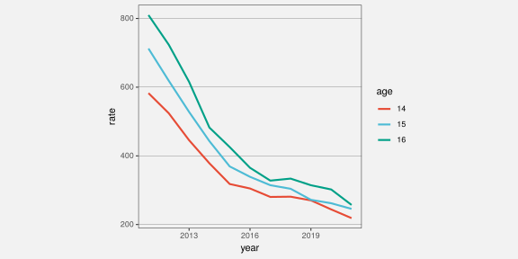
Figure 2.2 shows a different data visualisation of the same data, this time a heatmap. If we use a data visualisation like Figure 2.2, detecting overall trends becomes more difficult and perceiving detailed changes in the crime rates is very much harder. Not all data visualisations are equally effective.
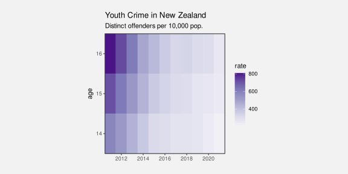
Although Figure 2.1 is very effective for the questions that we have considered so far, it is far less effective if we are interested in a different question, for example, whether the total crime rate is completely monotonic. Does the sum of the red, blue, and green lines always decrease year on year? A single data visualisation cannot be effective for all possible questions.
Suppose that we are interested in what the exact crime rate was for 16-year-olds in 2011. Neither Figure 2.1 nor Figure 2.2 is the best option for answering this quesion. The best option in this case is actually Table 2.1.
What makes a data visualisation effective? Why are some data visualisations more effective than others? The purpose of this document is to provide explanations for why, when, and how data visualisation works.
2.1 How will it help?
You may have heard that statisticians hate pie charts.2 But do you know why? Do pie charts have any redeeming features?
Conversely, bar plots are extremely popular, but why are they so good? Knowing more about why different plots work for different situations will help us to make better decisions about when to use what sort of data visualisation.
There is a lot of useful information and understanding about how data visualisations work, but it is distributed throughout and embedded within a very broad, deep, and detailed data visualisation literature. There is a need for a simple, coherent explanation that is accessible to a less expert audience.3
Understanding how data visualisation works will enable us to:
- Decide which data visualisations we should use.
- Justify our choice of data visualisation.
- Critically analyse data visualisations created by others.
- Reason about how to improve the effectiveness of a data visualisation.
- Reason about whether a novel visualisation will be effective.
2.2 Scope
The focus of this document is static data visualisations for presentation. The assumption is that our data values have an interesting property and we want to produce a display that makes it easy and efficient for viewers to perceive that property. Some of the information that we cover will also apply to interactive graphics and to exploratory graphics, but the specific requirements of those types of data visualisation will not be addressed.4
This document is also focused on what vision science has to tell us about effective data visualisation. We will consider factors that influence how rapidly and how accurately information can be extracted from a data visualisation. This will include findings from a broad range of research, encompassing Statistics, Computer Science, Psychology, and Cartography.5
However, this document does not cover all fields of research that impact on data visualisation. We will not, for example, address the ethical use of data visualisation, beyond a basic assumption that we want to faithfully represent the properties of the data.6
This document is also aimed at a numerate audience, so we assume an appreciation of the importance of collecting the right data in the right way for the questions that we hope to answer.7
It is also important to acknowledge that vision science cannot yet tell us everything about how data visualisation works. However, what is known will help us to have some understanding of why some data visualisations are so effective and others are less effective.
As well as being a synthesis of a large range of data visualisation research, this document is also a simplification of that research. Some details are smoothed over and some details are just left out. The goal is to provide a framework that is easy to understand by non-experts and easy to apply to a broad range of data visualisations. References to the relevant literature are provided in footnotes so that the interested, or sceptical, reader can dig deeper.
2.3 Terminology
Data visualisations come in a wide variety of forms (see Figure 2.3), with each form having its own name: scatter plots, line plots, bar plots, histograms, etc. There are also many different names for the different components of a data visualisation: lines, bars, points, axes, scales, legends, keys, titles, sub-titles, etc.
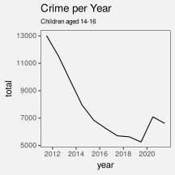
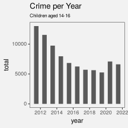
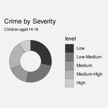
In this document, we will reduce that complexity in two ways. First of all, we will not distinguish between different forms of data visualisation; scatter plots, bar plots, line plots, and histograms are all just data visualisations. Secondly, we will distinguish between only three core components of a data visualisation: data symbols, guides, and labels.8
- Data symbols
- Data symbols are the geometric shapes that represent data values, for example, the lines in a line plot, the bars in a bar plot, and the segments of an annulus in a donut plot (see Figure 2.4). We will spend a lot of time looking at how data symbols work.
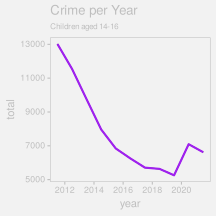
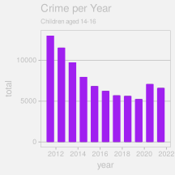
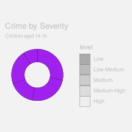
- Guides
- Guides are the elements of a data visualisation that explain how data values are represented, for example the axes on a line plot or bar plot and the legend on a donut plot (see Figure 2.5). We will see later that guides have a lot in common with data symbols (see Section 14.2).
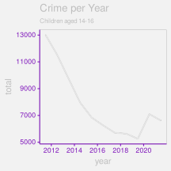
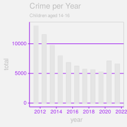
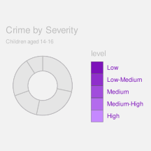
- Labels
- Labels are the text elements that provide context and background information about a data visualisation (e.g., titles and captions). Labels may also guide the viewer to the important properties of the data. Notice that not all text elements are labels.
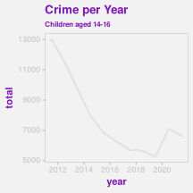
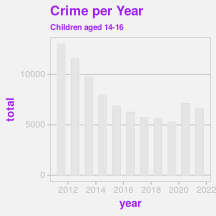

2.4 Mappings
Although we have reduced a data visualisation to just three components, data symbols, guides, and labels, there are still many possible variations. Which data symbols are being used? How are the axes labelled? What colours are being used? As much as possible, we are going to further reduce the design of a data visualisation to a single question: What mappings are being used?9
Much of this document is focused on considering how data values are being mapped, or encoded, into a visual representation. For example, in the line plot of crime rates for different ages in New Zealand in Figure 2.1, the data values are year, crime rate, and age (see Table 2.1) and the data symbols are a set of coloured lines.
We can describe this data visualisation in terms of a set of mappings (see Figure 2.7):
Each
yearvalue is encoded as a horizontal position along the x-axis and eachratevalue is encoded as a vertical position along the y-axis. For example, theyear2011 maps to a location near the left edge of the plot and therate810 maps to a position near the top edge of the plot.
The combined values ofyearandrateare encoded as the locations through which we draw the coloured lines.Each
agevalue is encoded as a colour. For example, theage16 maps to a green colour. Theagevalues are encoded as the colours of the lines.
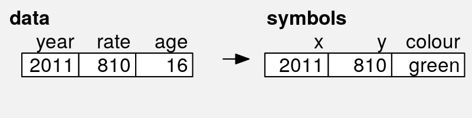

year, rate, and age to x and y positions and colour.
The heatmap of the same data (see Figure 2.2) provides a different visual representation because it involves different data symbols, rectangles this time, and a different set of encodings (see Figure 2.8):
Each
yearvalue is encoded as a horizontal position along the x-axis and eachagevalue is encoded as a vertical position along the y-axis. For example, theyear2011 maps to a location near the left edge of the plot and theage16 maps to a position near the top edge of the plot.
The combined values ofyearandrateare encoded as the locations at which we draw the coloured rectangles.Each
ratevalue is encoded as a colour. For example, therate810 maps to white, while lowerratevalues map to progressively darker shades of purple. Theratevalues are encoded as the colours of the rectangles.
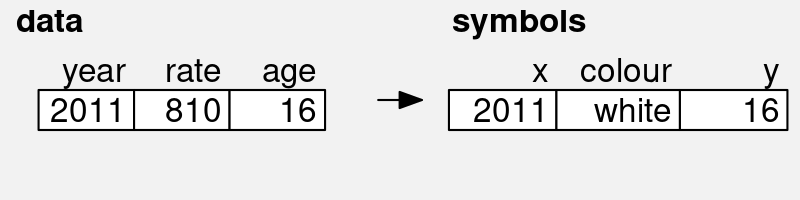
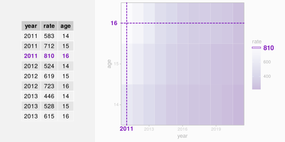
year, rate, and age to x position, colour, and y position.
We will look at a variety of different encodings from data values to data symbols (Figure 2.9). Understanding why some encodings work better than others will help us to understand why some data visualisations are more effective than others.
2.5 How to read this document
ADD basic navigation suggestions
NOTE the review section
NOTE that there are references to the literature in the footnotes
All section and figure cross-references are hyperlinks, so clicking them will navigate to the relevant section or figure. Even more helpfully, hovering the mouse over a hyperlink will show a preview of the relevant section or figure. This is particularly effective for figures because it obviates the need to reproduce the same image multiple times; just hover over the figure link to see the image that the text is referring to.
2.6 Summary
Data visualisations can be incredibly effective for presenting important properties of data values. However, any one data visualisation may only be effective for certain data values and for certain data properties.
The goal of this document is to explain why some data visualisations are more effective than others; how data visualisation works.
The important elements of a data visualisation are data symbols, which are visual representations of the data values, guides, which explain how data values are encoded as data symbols, and labels, which provide context and guidance.
We can characterise a data visualisation in terms of the mappings that it uses to encode data values as data symbols.
3 The Visual System
Understanding why some mappings are more effective than others will depend upon an understanding of how the human visual system works. The effectiveness of an encoding from data values to data symbols will depend on how well we can decode from the data symbols to the properties of the data (Figure 3.1).
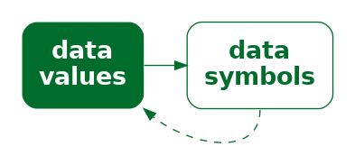
In this section we will establish a very simple model of the visual system that we can refer to as we discuss different mappings.10
3.1 The eye
In order for us to perceive a data visualisation, light must emit from the data visualisation (on screen) or reflect off the data visualisation (in print) and enter the eye. Light passes through the pupil, is focused by the lens, and is projected onto the retina at the back of the eye. The retina contains around 100 million light-sensitive nerve cells and signals from those are combined into about 1 million nerve fibres in the optic nerve, which passes signals on to the brain (see Figure 3.2). A very large amount of visual information is gathered by the eye and passed on to the brain.

3.2 Visual focus
Figure 3.3 shows a slightly more detailed view of the structure of the eye (compared to Figure 3.2). The retina contains two types of light-sensitive cells: cones and rods. The cones are sensitive to colour and are concentrated very densely at the centre of the retina, in an area called the fovea. Rods only detect the amount of light (monochrome vision) and are spread more sparsely towards the periphery of the retina.
This arrangement means that, despite the experience of a complete, detailed field of view, we only get detailed and colourful information from a small foveal region (less than 5 degrees of visual angle).
The information from our peripheral vision is colourless and low-resolution.
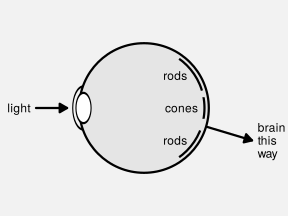
Furthermore, when we view an image, we do not simply stare at the centre and see everything. Instead, we perform a series of fixations, which are brief periods of focus on one area of the image, with saccades in between, which are rapid changes in the location of our focus. Figure 3.4 demonstrates that where we look within an image makes a difference.11
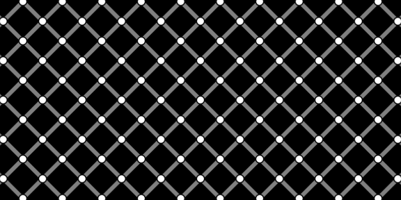
Figure 3.5 shows eye-tracking data from one person viewing an image for 10 seconds.12 The original image is shown on the left and eye-tracking data is shown on the right, with hollow black circles showing the position of the coloured circles in the original image. In the eye-tracking image, the fixations are shown as purple circles and the saccades are shown as lines between the circles. For example, we can see that the viewer has fixated multiple times upon the large, colourful circles in the original image.
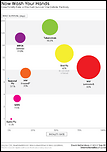
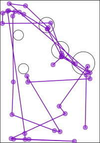
ADD footnote that refers to Tufte’s “within the eyespan” page 67 of “Envisioning Information” (talking about small multiples): “Information slices are positioned within the eyespan, so that viewers make comparisons at a glance - uninterrupted visual reasoning.”
3.3 Visual memory
When we switch focus to different areas of an image, we may need to remember information from a previous area of focus. The most important feature of this visual memory is that it is very limited. We can only hold in memory a small number of items at once.
ADD footnotes to cite Ware 4th ed p397-405 and p423-425
And footnote that acknowledges some controversy (different models and number of items limit vs continuous resource limit), with ref to e.g., “Psychophysical scaling reveals a unified theory of visual memory strength” Schurgin et al (2020) and the binary map model
3.4 Visual processing
Processing of the signals from the optic nerve occurs in several areas of the brain. Very basic visual features are extracted first, such as position (spatial arrangements), angle (orientations), colour, and simple patterns (spatial frequencies). This low-level information is passed on and built upon to produce higher-level representations, such as regions and shapes. Information is then also integrated from prior knowledge to assist with the identification of objects—things like trees, animals, and faces.14
Lower-level processing occurs subconsciously and more rapidly than higher-level processing, which can require conscious effort. Furthermore, lower-level processing occurs in parallel and can involve many instances of visual features at once, whereas higher-level processing will only focus on a small number of items or a single item at once. On the other hand, lower-level visual features are rapidly discarded as our attention shifts, while higher-level visual objects are more persistent and may become part of long-term memories (see Figure 3.8).
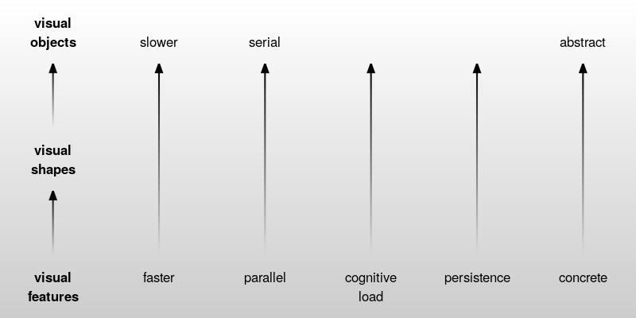
Figure 3.9 shows an image that is made up of many small items: tiny triangles with different lengths, orientations (angles), and colours. The orientations of the triangles represents wind direction and the length of the triangles represents wind strength; blue triangles are over the sea and green triangles are over land.15 The visual system can very quickly perceive many small visual features at once. There is no need to concentrate separately on every individual triangle in the image.. At a higher level of processing, darker and lighter regions are identified as well as regions of different colours. For example, a band of lighter wind forms a line from the top-left corner at a roughly 45-degree angle. At a higher level of processing again, at least for the denizens of Oceania, the green regions are recognised as a very familiar object: the outline of New Zealand.
The small lines convey a lot of simple pieces of information—what is the wind strength and direction at each location—though we have to focus on a particular spot in order to extract that information. The darker and lighter regions convey several more complex ideas like regions of stronger and lighter winds. The green regions combine to convey the single complex and abstract concept of New Zealand.
3.5 Visual differences
The ability to gather a large amount of basic features from an image very quickly is supplemented by rapid visual processing that combines and summarises the information. These subconscious processes extract some properties from an image without any mental effort.
For example, in Figure 3.10 (a) we can detect the one teal dot amongst the 24 orange dots without effort. Figure 3.10 (b) shows that this task remains effortless even if the number of distractors is much larger.16
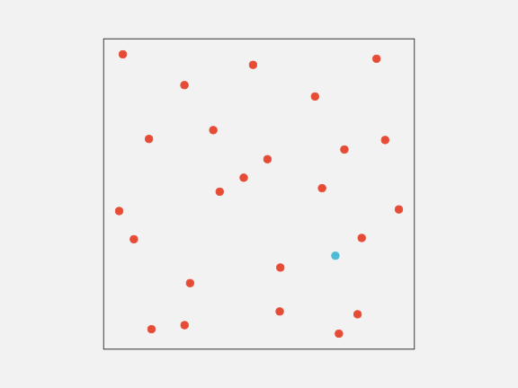
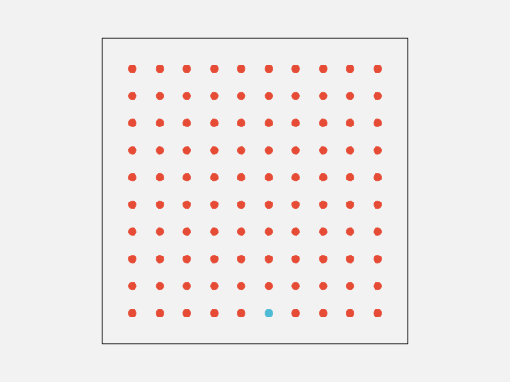
This ability to identify an item that is different from all other items within an image also applies to other basic features like size, as shown in Figure 3.11.
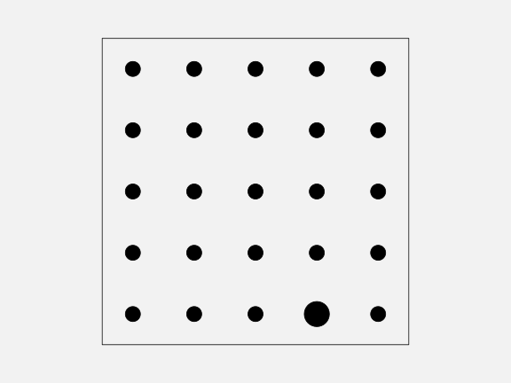
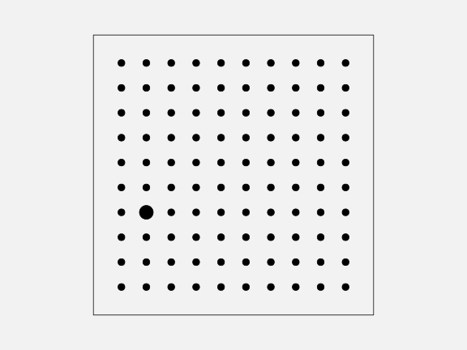
If an item differs on more than one visual feature, the effect is even stronger (Figure 3.12). The visual system is very sensitive to items that are different in terms of basic visual features.
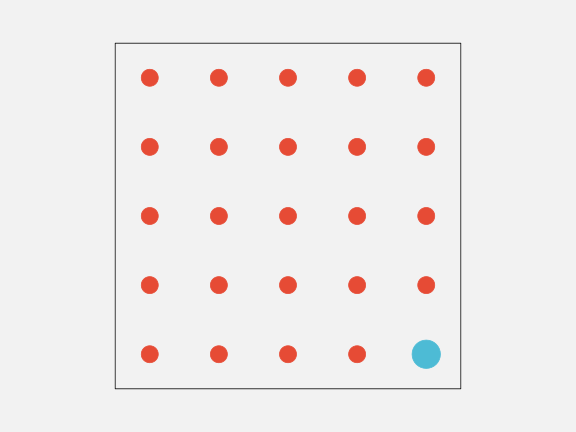
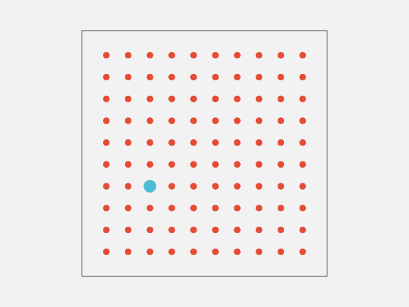
On the other hand, if the distractor items are both similar on one visual feature, but different on another, and if the arrangement of the items is less structured, then finding a particular item of interest becomes much harder. For example, if we look for the single larger teal dot in Figure 3.13, it is much harder to find than it is in Figure 3.12. The visual system’s sensitivity to different items is much greater when all other items are the same.17
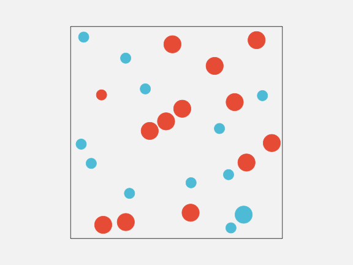
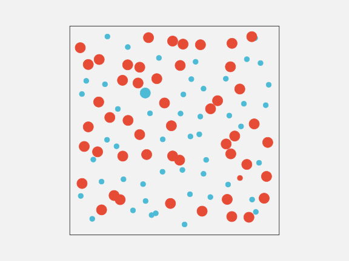
3.6 Visual attention
Where we focus within an image is not random.18 The figures from Section 3.5 show that our attention is automatically drawn to the larger, brighter, and more colourful items within an image. This happens due to very early visual processing and without conscious thought.
Where we focus within an image, and what information we extract, is also affected by conscious goals—what are we looking for?19 For example, when you were looking for the larger teal dot in Figure 3.13, did you notice that there was also a single small orange dot? Now that your attention has been drawn to that task, it will be easier to find the smaller orange dot.
3.7 Visual similarities
In Figure 3.13, we can see several groups of items: orange dots, teal dots, large dots, and small dots. These separate groups of items are identified based on their similarity—each group of items have the same size and the same colour.
As with the detection of differences that we saw in Section 3.5, the grouping of similar items within an image happens automatically and without conscious effort. Furthermore, there are other visual properties that mean we automatically perceive items as groups: items that are close together (items that have similar positions) are seen as a group; items that are connected by lines are seen as a group; and items that are enclosed by a border or background are seen as a group.20
For example, in Figure 3.14 there are several matrices of dots. In each matrix, we can see either rows of dots or columns of dots by manipulating visual features that affect our perception of groups: dots that are closer together for a group; dots that are the same colour form a group; dots that are connected by lines form a group.
These grouping effects are very powerful and can even be used to override each other in some combinations. Figure 3.14 shows that an enclosing border can be stronger than a connecting line, connecting lines can be stronger than closeness, and closeness can be stronger than similar colours.
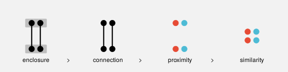
Another type of automatic grouping is demonstrated in Figure 3.16. On the left is a collection of dots. We naturally perceive a horizontal line and a circle from these dots, as shown in the centre of Figure 3.16. We automatically complete lines, particularly smooth curves, even when the curve is broken, as in the central set of dots. We do not tend to complete lines with sharp corners, as indicated on the right of Figure 3.16.21
When we visualise qualitative data, we will be able to rely on the automatic identification of different groups of data symbols based on visual similarities.
A data visualisation of qualitative data may be effective if it relies on the automatic identification of visual groups (proximity, similarity, etc).
3.8 Visual simplicity
Figure 3.17 shows an arrangement of dots, similar to Figure 3.16. The collection of dots on the left has an ambiguous interpretation. Is this a single shape, or two overlapping shapes (as indicated in the centre of Figure 3.17), or some complex combination of multiple shapes (as indicated on the right of Figure 3.17)?
Our visual system has a preference for the simple interpretation. Given an ambiguous arrangement of visual elements, we will tend to perceive whatever is most orderly, regular, and coherent.22
Figure 3.18 shows that we also perceive groups when items have a symmetric arrangement.
These results suggest that a data visualisations will be more effective if it is simple and orderly. We should lead the viewer where they already want to go rather than trying to force the viewer to perceive a more complex interpretation.
A data visualisation may be effective if it is orderly and lends itself to a simple interpretation.
3.9 Visual tasks
Identifying whether visual elements are the same or different (Section 3.5) is an example of a very simple visual task. Figure 3.19 (on the left) shows another simple visual task: judging the ratio of different lengths. However, on the right of Figure 3.19 is an example of a task that is much more difficult. In this task, we have to identify which of the four shapes in the bottom row is not a rotated version of the shape at the top.
The left-hand task in Figure 3.19 is effortless and can be performed immediately. The right-hand task in Figure 3.19 requires much more deliberate effort and time to perform.
One way to create an effective data visualisation is to rely on visual tasks that are rapid and require little effort.
3.10 The dangers of the visual system
Visual illusions.
The fact that vertical lines appear longer than horizontal lines is a good simple one to demonstrate and relate to data vis (both L and T versions).
3.11 Summary
The human visual system captures a very large amount of information from the visual field.
Detailed information is only available at the centre of the visual field so multiple fixations are required to capture detailed information from multiple locations within an image.
Large numbers of simple features are rapidly extracted, while more complex visual items take longer and require more congnitive effort, but persist for longer.
Large, bright, colourful items automatically stand out.
Items are automatically grouped in terms of similarity (of basic visual features), proximity, connection, and enclosure.
The main point is that the visual system is very good at perceiving certain visual features.
An effective data visualisation will make use of the things that the visual system is good at.
4 Visual Features
We have established that the mappings from data values to data symbols are fundamental to a data visualisation. We have also established some basic properties of the visual system and we have identified three levels of visual processing: visual features, visual shapes, and visual objects.
There are many possible ways to map from data values to data symbols. For example, in Section 2.4, we saw that the same data values could be mapped in different ways to produce different data visualisations (Figure 2.1 and Figure 2.2).
On one hand, there are many possible encodings to choose from and, on the other hand, there are many possible data symbols to map to.
In this section, we begin to explore different sorts of mappings, starting with the simplest case: each data value is encoded as a basic visual feature of a data symbol; and one data value maps to one data symbol (Figure 4.1).

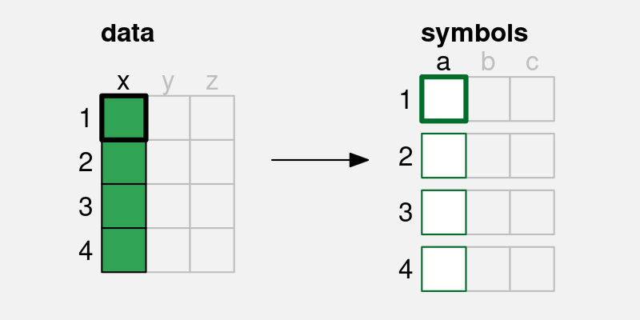
a) is mapped to a visual feature (x) of a single data symbol.
4.1 Bar plots
In order to demonstrate mapping data values to visual features, we will work with a data visualisation of the total number of crimes for different ethnic groups. The data values are shown in Table 4.1.
| group | total |
|---|---|
| European/Other | 31274 |
| Māori | 41787 |
| Pasifika | 6993 |
| Unknown | 5632 |
A bar plot of these data is shown in Figure 4.2. This is a very effective way to visualise the total values, particularly if we are interested in comparing the raw totals. With this data visualisation, it is very easy to answer questions like the following:
- Which ethnic group has the largest total number of offenders?
- Which ethnic group has the smallest total number of offenders?
- Is the total number of offenders higher for Māori or Pasifika?
- Is the total number of offenders for European/Other more or less than half the total for Māori?
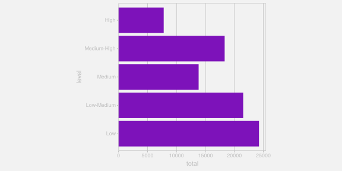
Why is the data visualisation in Figure 4.2 so effective? To help answer that question, we need to look at the encoding that is being used to map the data values to data symbols.
4.2 Visual features
The data symbols in Figure 4.2 are a set of rectangles or bars. However, the important visual feature of the rectangles is their length; the thickness of the bars does not relate to the data values at all (see Figure 4.3). The total number of crimes for each ethnic group is encoded as the length of a rectangle. Each data value is mapped to the length of one rectangle.23
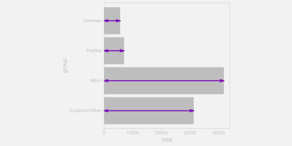
There is another mapping being used in Figure 4.2: The crime group is encoded as the vertical positions of the bars (see Figure 4.4). Each group value is mapped to the vertical position of one rectangle.
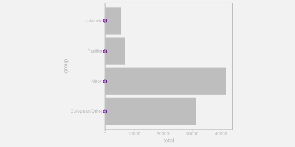
Length and position are examples of basic visual features. One way to make an effective data visualisation is to encode data values as the basic visual features of a data symbol. This is effective because basic visual features are identified rapidly and without conscious effort by our visual system (Section 3.4). Figure 4.5 shows some other examples of basic visual features.24
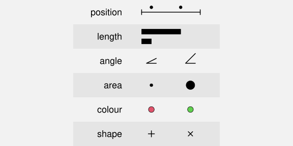
One reason why a bar plot is an effective data visualisation is because it involves a mapping from data values to the basic visual features of data symbols—the positions and lengths of bars—and basic visual features are processed rapidly and subconsciously by our visual system.
4.3 Quantitative features
As we discussed in Chapter 3, the real purpose of encoding data values as data symbols is to make use of the visual system to decode the data values from the data symbols. In this section, we are considering mappings from data values to basic visual features, so we need to consider how well we are able to decode from visual features to data values (Figure 4.6).
One issue to consider is whether a visual feature is able to represent all of the information in the data values.26 Some types of data contain more information than others:
Quantitative data consists of numeric values, which naturally possess not only an ordering, but information about the size of differences between values. For example, the year 2020 comes after the year 2010 and there is a gap of 10 years in between. This is also referred to as interval data. Ratio data is quantitative data that also contains a “zero” reference value, so there is also information about absolute size and ratios of differences. For example, 200 offenders is twice as many as 100 offenders.
Qualitative data consists of categorical values. Ordinal data consists of categories that are ordered, but there is no information about the size of differences. For example, a “high” crime level is more severe than a “medium” crime level, which is more severe than a “low” crime level, but we cannot measure the size of the differences. Nominal data consists of just group labels, e.g., ethnic groups, and the only information we have is that the categories are different from each other.
Figure 4.7 shows that position, length, angle, and area are visual features that are capable of representing quantitative data values. For example, a bar that is twice as high as another bar comfortably represents a data value that is twice as much as another data value. All but position also possess a natural representation of zero.
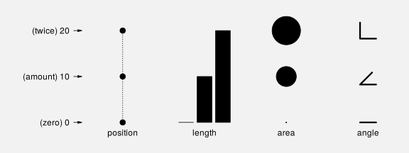
By contrast, Figure 4.8 shows that colour and shape are not capable of representing quantitative values. For example, the colour blue is not twice the colour green and a plus sign is not 10 more than a triangle. In effect, these visual representations lose information.
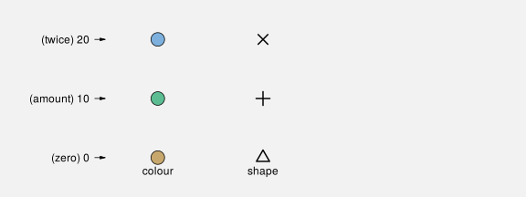
The bar plot in Figure 4.2 visualises the total number of offenders, which are quantitative data values. These quantitative values are encoded as the lengths of bars, which is a visual feature that is capable of conveying all of the information in quantitative values.
One reason why a bar plot is effective for visualising quantitative data values is because the quantitative data values, the counts, are mapped to a quantitative visual feature, the lengths of the bars.
4.4 Qualitative features
If we have qualitative data, then we are primarily concerned with conveying whether data values are the same or different. Figure 4.9 shows that position, colour, and shape are capable of representing qualitative data values. For example, blue is clearly different from green, which is clearly different from brown. In Section 3.7 we saw that we also easily identify visual objects that have the same visual features.
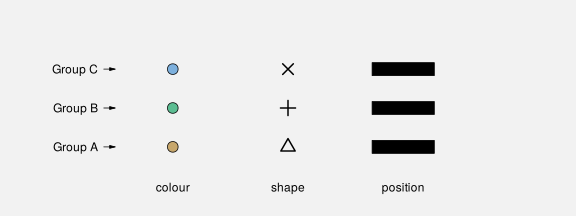
By contrast, Figure 4.10 shows that length, area, and angle are not appropriate for representing qualitative data values. While we can identify whether lengths or areas are different from each other, these visual features imply an inherent order, which is misleading because that adds information that is not present in the data values.
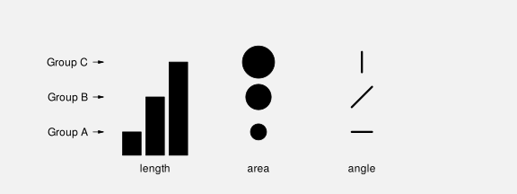
The bar plot in Figure 4.2 encodes the ethnic groups, which are qualitative data values, as the position of bars, which is a qualitative visual feature.
One reason why a bar plot is effective for visualising qualitative data values is because the qualitative data values, the groups, are mapped to a qualitative visual feature, the positions of the bars.
4.5 Accuracy
Another issue that impacts on how well we can decode the data values from a visual feature (Figure 4.6) is the accuracy with which we can perceive quantitative values from visual features. For example, how well can we perceive the size of the difference between the length of two bars?27
It is easy to demonstrate that judgements of this sort are harder for some visual features than others. For example, Figure 4.11 presents sets of three bars, which differ by length, circles, which differ by area, and polygons, which differ by shape (number of sides). Judging the relative sizes of the bars is easier than judging the relative sizes of the circles and comparing the polygons is extremely difficult.
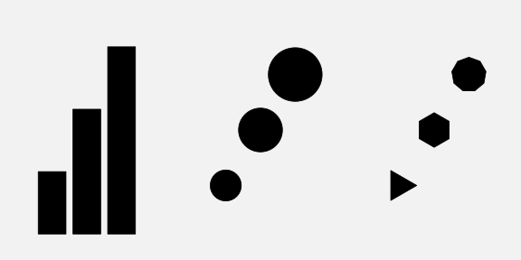
This issue has been studied experimentally and Figure 4.12 shows the established ordering of the accuracy of basic visual features, with more accurate visual features at the top.28 A data visualisation that encodes data values as visual features near the top of this ranking will be more effective than one that encodes data values as visual features near the bottom.
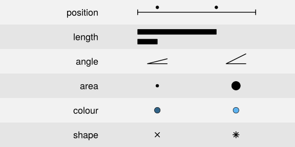
The bar plot in Figure 4.2 encodes the total number of offenders, which are quantitative values, as the lengths of bars, which is an accurate visual feature. This means that viewers can make accurate comparisons between the lengths of the bars.
One reason why a bar plot is effective for visualising quantitative data values is because the quantitative data values, counts or proportions, are encoded as a very accurate visual feature, the lengths of the bars.
4.6 Capacity
When we are visualising qualitative data values, we are no longer concerned with accurately perceiving the size of differences; all we are concerned with is perceiving whether two values are different. For example, can we perceive a difference between two colours?
The issue in this scenario is the capacity of a visual feature: how many different categories can be represented (and still perceived as clearly different from each other).
Figure 4.13 shows that colour has a limited capacity. A small number of different colours are very easy to differentiate, but the differences become harder to perceive with a greater number of colours.29
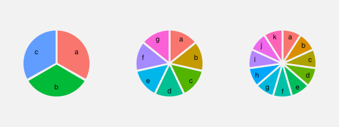
By contrast, Figure 4.14 shows that position has a very large capacity. We can easily differentiate between locations even as the number of locations becomes large.
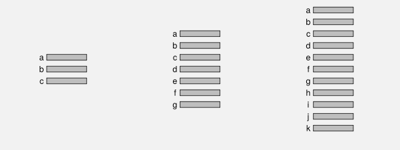
The bar plot in Figure 4.2 encodes the ethnic group as the position of bars, which makes it easy to differentiate between the different ethnic groups.
One reason why a bar plot is effective for visualising qualitative data values is because the qualitative data values, the groups, are encoded as a visual feature that has excellent capacity, the positions of the bars.
Need to also mention limited capacity of point shapes? Footnote: “Evaluation of symbol contrast in scatterplots” Li et al (2009). Cleveland “The Elements of Graphing Data” 1994 [p239] suggests set of discriminable data point shapes: o, +, <, s, w, which is small, though no explicit mention of capacity limit.)
4.7 Case study: Dot plots
We have seen that, for several reasons, Figure 4.2 is an effective way to visualise the total number of offenders for different ethnic groups. Figure 4.15 shows an alternative representation of these data in the form of a dot plot (Cleveland 1985).
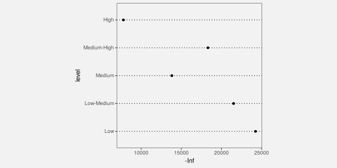
Like the bar plot, this is a very effective data visualisation, and for very similar reasons. This data visualisation uses a different data symbol, data points instead of bars, but each data value is encoded as the basic visual feature of one data symbol. Furthermore, the quantitative data values (the totals) are encoded as the horizontal position of the points, which is a visual feature that is capable of representing numeric values and it is a very accurate visual feature, and the qualitative data values (the groups) are encoded as the vertical position of the points, which is a visual feature with a high capacity.
It could be argued that the dot plot in Figure 4.15 is even more effective than the bar plot in Figure 4.2 for perceiving the differences between totals because position ranks higher than length in Figure 4.12. On the other hand, if we want to compare totals in terms of their ratios, Figure 4.2 is superior because it includes a representation of zero.
4.8 Case study: Pie charts
Figure 4.16 shows yet another visualisation of the total number of offenders for different ethnic groups, this time a pie chart. This is a less effective representation of the data than the bar plot in Figure 4.2 or the dot plot in Figure 4.15 and we can use familiar reasoning to see why.
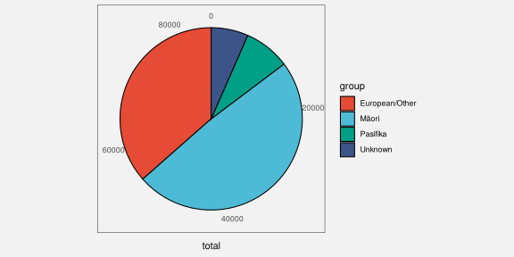
The data symbols in Figure 4.16 are wedges or segments of a circle and, on the positive side, the data values are encoded as basic visual features of these symbols: The total values are encoded as the angle and/or area of the wedges and the group values are encoded as the colour of the wedges.30 Although colour is an appropriate visual feature to represent qualitative data, and it has sufficient capacity to differentiate between only four groups, the encoding of quantitative values as angle and/or area leads to less accurate perception of the differences between totals (compared to the lengths and positions encodings that were employed in the bar plot and the dot plot).
4.9 Summary
A bar plot is a very common data visualisation for representing numeric values, particularly counts, for several different groups. There are several reasons why bar plots work so well:
- A bar plot encodes data values as basic visual features, which are perceived rapidly and without conscious effort.
- A bar plot encodes the quantitative counts as a quantitative visual feature (length) and the qualitative groups as a qualitative visual feature (position).
- A bar plot encodes the counts to a visual feature that is perceived very accurately (length) and the groups to a visual feature that has a high capacity (position).
Dot plots are also very effective for the same scenario for the same reasons, except that a dot plot uses position instead of length to represent the quantitative values.
Pie charts by comparison have some weaknesses:
- A pie chart encodes quantitative counts as angle and/or area, which is less accurate.
- A pie chart encodes qualitative groups as colour, which has a lower capacity.
5 Position
Position is fundamental to our perception of an image.31
NOTE that this is going to have to stick to simple demonstrations using bar plots (e.g., stacked vs dodged). Don’t get scatter plots until chapter 10 (!) Case study q-q plots in combine.Rmd. Ditto log-log plot.
5.1 Aligned versus unaligned
Elaborate on the classic order to allow for aligned vs unaligned. Not entirely sure how to demo this with actual plot, though in quantitative (length) there is an abstract demo.
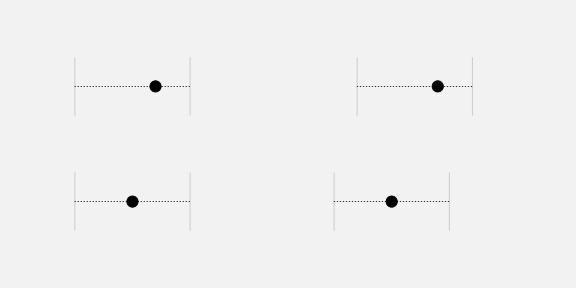
5.2 Overplotting
If a data value is mapped to a representation that is not visible, decoding is going to be a challenge.
Bring jittering case study back here. Add link from birthday cake example back to jittering.
big data (or even medium data) - need better name => overlapping and summary plots like boxplots (then violin plots)
5.3 Non-linear scales
The effective decoding of position is dependent on a linear encoding.32
In a non-linear encoding, the same visual difference does not decode to the same data difference. That is going to be confusing!33
NOTE that there ARE some situations where non-linear position. scales are ok, e.g., log-log. Length is still dodgy. You DO still get ordinal info, even if cannot decode sizes of differences. Non-linearity might actually be ok on non-position scales, e.g., a colour scale for numeric data, where differences are smaller at one end; all you are after, if you are using colour, is ordinal, so changing colours more swiftly at one end of the scale is ok (?) At least some ‘colorspace’ functions allow non-linear palettes. Revisit in qualitative.Rmd to point out that non-linear ordinal scales are ok, e.g., jet colour scale
5.4 Summary
6 Length
Figure 6.1 shows a bar plot of the total number of offenders in each police district in New Zealand (for ages 14 to 16 and from 2011 to 2021). For the reasons outlined in Chapter 4, this data visualisation is effective for comparing the number of offenders in different police districts.
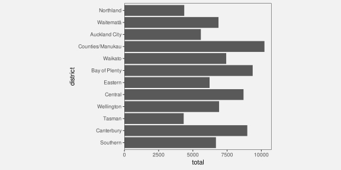
Figure 6.2 shows a bar plot of the same data, but with the bars ordered from longest to shortest. This data visualisation uses the same mappings as Figure 6.1—police districts are encoded as the vertical positions of the bars and the total counts are encoded as the lengths of the bars—which means that it is also effective for comparing the total number of offenders between police districts.
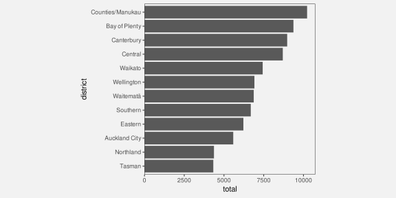
However, Figure 6.2 is more effective than Figure 6.1 for some comparisons. For example, it is easier to compare the Northland district with the Tasman district in Figure 6.2. The fact that two data visualisations with the same mappings can have a different effectiveness suggests that there is more to know about how different visual features work.
This section covers some more details about how the length visual feature works.
6.1 The distance effect
In Section 4.5, we saw that position and length were the most accurate visual features (see Figure 4.12). However, this accuracy decreases if the two visual features that are being compared are not in close proximity (see Figure 6.3).34
This helps to explain why Figure 6.2 is more effective than Figure 6.1 for some comparisons (e.g., Northland versus Tasman).
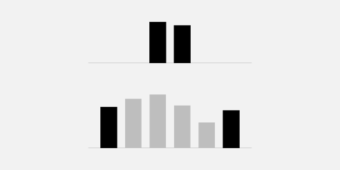
One reason for ordering the bars in a bar plot from longest to shortest is because, for some common comparisons, the ordering places the bars that are being compared closer together, which improves the accuracy of the comparison.
6.2 Unaligned length
Figure 6.4 shows that it is harder to accurately compare the lengths of two bars if they are unaligned and do not share a common baseline (similar to the accuracy of comparing positions; Section 5.1).
Figure 6.5 shows an alternative visualisation of the data on the total number of offenders in different ethnic groups. The bar plot of these data that we saw in Figure 4.2 encoded ethnic groups as the positions of the bars so that the bars were arranged vertically with a common left-hand edge. In Figure 6.5, the ethnic groups are encoded as different colours and the bars are “stacked” horizontally.35
Although the total number of offenders has been encoded as the same visual feature in both Figure 6.5 and Figure 4.2, the lengths of the bars, comparing those lengths is much harder in Figure 6.5 because the lengths are unaligned.
One reason why stacked bar plots are less effective for some comparisons is because we are forced to compare the unaligned lengths of the bars.
6.3 Case study: Stacked versus side-by-side bar plots
Stacking bars, which creates unaligned lengths, is something that arises when we use a bar plot to show a quantitative variable broken down by more than one qualitative variable. For example, Table 6.1 shows data on the number of offenders in different ethnic groups for individual years (from 2011 to 2021). This is a more detailed version of the data from Table 4.1.
| group | count | year | |
|---|---|---|---|
| 1 | Māori | 5957 | 2011 |
| 2 | Pasifika | 1092 | 2011 |
| 3 | European/Other | 5775 | 2011 |
| 4 | Unknown | 194 | 2011 |
| 6 | Māori | 5458 | 2012 |
| 7 | Pasifika | 1040 | 2012 |
Figure 6.6 shows the number of offenders (quantitative) for each ethnic group (qualitative) and for each year from 2011 to 2021 (treated here as qualitative, or at least discrete). In this data visualisation, the number of offenders is mapped to the lengths of the bars, the years are mapped to the horizontal position of the bars, the ethnic groups are mapped to the colours of the bars, and the bars are stacked vertically.
The problem that we face in this situation is that there are four bars to show for each year. Stacking the bars is one solution, but as we have just seen, this makes some comparisons more difficult. For example, we can easily see that the number of offenders in the unknown group increased after 2016, but it is much harder to see what has happened to the European/Other group since 2016.
An alternative visualisation is shown in Figure 6.7. This has placed the four ethnic groups side-by-side for each year. It is now easier to see the changes over time for the European/Other group because all bars are now aligned. Unfortunately, as we saw in Section 6.1, some comparisons are more difficult because the bars are now further apart and have distractors in between.
Yet another variation is shown in Figure 6.8. This time we have placed all years side-by-side for each ethnic group. This provides the clearest view of the changes over time for each ethnic group because the relevant bars are close together and aligned. However, there are other comparisons that are considerably more difficult because of the distance between the relevant bars, for example, comparing between ethnicities for a specific year.
There is no single best visualisation in general for this situation because different visualisations each have their strengths and weaknesses. If a particular sort of comparison is to be emphasised, then one data visualisation might stand out, but there is also the option of providing more than one data visualisation in order to cover more comparisons.
6.4 Perception is relative
Figure 6.9 shows that the perception of differences between the lengths of bars is relative; it is easier to detect smaller differences when the visual features that we are comparing are smaller.36 It is easier to see that the pair of bars on the left have different lengths and harder to see that the pair of bars on the right have different lengths. All three pairs of bars have different lengths, but the absolute size of the difference is the same, so the size of the difference relative to the bar lengths gets smaller as the bars get longer.
Figure 6.10 shows that we can make it easier to judge the differences by providing reference marks. Each pair of black bars is the same and each pair of bars differs in length by the same small amount. The difference between the bars in each pair is difficult to perceive because the difference is small relative to the lengths of the bars. The reference marks in the middle and right-hand pair of bars provide shorter lengths to compare, so we are able to more easily perceive the small differences. For example, for the pair of bars on the right, we can compare the lengths of the short white gaps rather than comparing the longer black bars.
Figure 6.11 shows a bar plot of the number of offenders in each police district (Figure 6.1) with some grid lines added. Although it is difficult to compare the bars for Northland and Tasman because they are quite far apart and there are distractors in between (Section 6.1), the addition of the grid lines makes it easier to perform the comparison because we are able to compare the distances from the ends of the bars to the nearest grid line. Those distances are much shorter than the bars so it is easier to perceive the small difference.
One reason why grid lines are effective is because they allow comparisons of smaller lengths or distances, which means that it is easier to perceive smaller changes.
6.5 Summary
Bar plots are effective because they encode quantitative values as lengths, which are accurate visual features.
However, comparisons between the bars in a bar plot can be difficult if the bars are far apart, especially if there are distractors in between.
Furthermore, stacked bars are more difficult to compare because they require comparing unaligned lengths.
Finally, it is easier to perceive differences between shorter bars than between longer bars because the perception of differences is relative.
Grid lines can help with comparisons because they make the distances being compared smaller, so smaller differences are easier to detect.
7 Colour
Figure 7.1 shows a pie chart of the number of offenders for different levels of crime seriousness (between 2011 and 2021). In this data visualisation, the crime level, which is a qualitative variable, is encoded as colour, which is appropriate for representing qualitative values (see Section 4.4). It is easy to identify different crime levels because it is easy to perceive differences between the colours of the wedges in the pie chart.
Figure 7.2 shows another pie chart of the same data, again encoding the qualitative level as colour. It is again easy to differentiate between different crime levels because we can easily perceive differences between the colours of the wedges. However, Figure 7.2 is more effective than Figure 7.1 because we can also perceive an ordering of the wedges from more serious crimes, which are darker wedges, to less serious crimes, which are lighter wedges.
The fact that there can be two data visualisations, Figure 7.1 and Figure 7.2, with the same mapping, the qualitative level of crime is encoded as the visual feature colour, but the two data visualisations have different effectiveness suggests that there is still more to learn about how different visual features work.
This section covers some more details about how the colour visual feature works.
7.1 Hue, chroma, and luminance
We have so far taken a very simplistic approach to colour, treating it as if it is a single qualitative visual feature (Section 4.4). However, the perception of colour can be divided into three separate visual features: hue, chroma, and luminance (Figure 7.3).37 Hue describes what we normally refer to as the colour name: reds, oranges, yellows, greens, blues, and purples. Chroma describes the colourfulness, from bright to dull, and luminance describes the lightness, from dark to light. Our visual system is capable to perceiving changes in hue and changes in chroma and changes in luminance.
We have described colour as a qualitative visual feature so far, but that really strictly only applies to hue. For example, Figure 6.5 used different hues to represent different ethnic groups. Hue is excellent for the perception of differences.
7.2 Ordinal visual features
Chroma and luminance are both nominal visual features in that they can be used to visualise different groups, but they are also ordinal visual features because we can perceive an ordering from a set of colours that differ in terms of either chroma or luminance or both. A set of colours that transitions from darker to lighter and/or brighter to duller conveys an ordering from larger to smaller.38
This helps to explain why Figure 7.2 is more effective than Figure 7.1. In Figure 7.2, the colours differ mostly in terms of luminance and chroma so we are able to perceive changes from larger values to smaller values because the colours transition from darker to lighter.
In this sense, chroma and luminance are able to convey more information than hue because they can represent nominal differences and ordinal differences, whereas hue can only represent nominal differences.
On the other hand, Figure 7.4 shows that chroma and luminance are even more limited than hue in terms of capacity. We can only use chroma and/or luminance to represent nominal data when there are very few different groups to represent.
7.3 Perception is relative
We saw in Section 6.4 that perception of lengths is relative. For example, smaller differences in length are easier to see when the lengths themselves are short (see Figure 6.9).
There is a similar rule for the perception of colours. Our perception of luminance and chroma is affected by neighbouring colours.39 This effect is demonstrated in Figure 7.5: the same colour when surrounded by a darker background appears lighter than it does when surrounded by a lighter background.
This effect also applies to the perception of hue. Figure 7.6 shows a pie chart of the number of offenders in each police district, with police district mapped to the colour of the wedges. There are two issues with the perception of the wedge colours: each wedge is affected by its neighbour so that, for example, some of the blue wedges look more green at the boundary with their more blue neighbour and more blue at the boundary with their more green neighbour; furthermore, the colours in the legend are perceived differently from the corresponding colours in the wedges because the legend colours are surrounded by a light grey, rather than sharing a boundary with a neighbouring colour.
The pie chart in Figure 7.6 is not an effective data visualisation because it encodes qualitative data values with many different groups as colour hue. This exceeds the capacity of the hue visual feature; it is difficult to clearly distinguish between all of the different hues (see Section 4.6).
Although it does not make the use of hue any more appropriate, for the purposes of demonstration, we can solve the colour perception problems in Figure 7.6 by adding a white border to all of the wedges (see Figure 7.7). Now all of the wedges and all of the squares in the legend are perceived relative to a surrounding white border.
7.4 Colour vision deficiency
Roughly 10% of the population, primarily men, suffer from a form of colour vision deficiency.40 In the most common case, the viewer will have difficulty distinguishing between red and green hues. Figure 7.8 simulates how the colours in Figure 7.1 would appear to a person with severe deuteranopia (red-green colour blindness).
In order to avoid confusion for viewers with CVD, it may be necessary to vary luminance and/or chroma in addition to or instead of hue. For example, Figure 7.9 shows how the shades of purple in Figure 7.2 would appear to a viewer with severe deuteranopia. The difference in hue is of no importance in this case.
7.5 Size matters
The perception of colours is also affected by the size of the coloured region. In particular, small regions of colour may blend together with neighbouring colours. 41 For example, on the left of Figure 7.10, the yellow and blue stripes are the same colours both in the top set if wide bars and in the bottom set of narrow bars. The right side of Figure 7.10 shows that the same colours may appear different when they are used as fill colours for larger regions, like bars, compared to when they are used for thin lines.
7.6 Colour palettes
When we encode nominal or ordinal data values as colours, we have to choose a set of colours, or a colour palette. For example, in Figure 7.1 we have to choose a different colour to represent each level of crime.
This choice is difficult because there are many different colours to choose from and often there is no obvious mapping from a data value to a particular colour. For example, what specific hue, chroma, and luminance should we choose to represent a high crime level?
There are also competing criteria involved in selecting colours. For example, although the primary goal is to represent different categories with colours that are as different from each other as possible, we also have to take into account that some viewers may have difficulty perceiving differences between particular colours (Section 7.4).
Fortunately, researchers have produced a number of predefined colour palettes that we can make use of.42 For example, the colours used in Figure 7.1 are based on palettes used in journals published by the Nature Publishing Group.43 There are also many helpful tools online.44
If the data symbols are arranged in a regular pattern, like in a bar plot, then comparisons between neighbours are most important, so we can order the colours to maximise neighbour differences rather than maximising all pairwise differences.45 Figure 7.11 demonstrates this idea with a bar plot of the crime rate in different districts for both 2011 and 2021. This bar plot uses the same set of hues as Figure 7.7, just in a different order so that adjacent bars have very different colours.
A similar idea is to just reuse a smaller set of hues, which means larger differences between adjacent colours, but repeat the set. The regular arrangement of the data symbols means that we can still differentiate between repeated colours because of the bar positions (Figure 7.12). For example, we can differentiate the pink for the Wellington district from the pink for the Eastern district because Wellington is at the end and Eastern is in the middle.
7.7 Case study: Divergent colour palettes
The Rugby World Cup is a competition that is held every four years, with the first event taking place in 1987. We have data on the total number of points that were scored and conceded in World Cup matches for Tier One nations (the top 10 rugby-playing nations) at each World Cup. Table 7.1 shows a sample of these data.46
| team | year | scored | conceded | diff |
|---|---|---|---|---|
| Italy | 1987 | 22 | 95 | -73 |
| Italy | 1991 | 27 | 67 | -40 |
| Italy | 1995 | 51 | 52 | -1 |
| Italy | 1999 | 10 | 168 | -158 |
| Italy | 2003 | 22 | 97 | -75 |
| Italy | 2007 | 30 | 94 | -64 |
Figure 7.13 shows a heatmap of the points differential (points scored for minus points scored against) for Tier One nations at each Rugby World Cup. The data symbols are rectangles, or “tiles”. The teams are encoded as the vertical positions of the tiles and the years are encoded as the horizontal positions of the tiles. These are both effective mappings and we can easily decode to teams or years. The points differentials are encoded as the colour of the tiles, but in a slightly complicated way. Positive data values map to a shade of purple, while negative values map to a shade of brown. In both cases, we have a constant hue, with increasing chroma and decreasing luminance as the data values get further away from zero.
The use of two hues creates two different groups (positive and negative values), while the changes in chroma and luminance convey changes in absolute magnitude (if only for ordinal comparisons).
A diverging colour palette is effective because it creates two distinct visual features: a nominal hue to differentiate between two groups and changes in chroma and/or luminance to encode ordinal values within each group.
7.8 Summary
Colour is really three visual features: hue, chroma, and luminance.
Hue is excellent for representing nominal data values.
Chroma and luminance can be used to represent ordinal data values, but they have a very limited capacity.
We should lean on the work done by experts when it comes to choosing colour palettes.
8 Congruent Mappings
The purpose of this section is to show that we need to consider more than just the accuracy or capacity of our mappings from data values to basic visual features in order to understand the effectiveness of a data visualisation.48
8.1 Implicit mappings
Sort of like pre-attentive analogue of learned decodings.
Do a simple example - maybe just the fact that a bar twice the length of another bar is perceived as “twice” !? These implicit mappings are the basis of whether visual features are quant or qual!?
When an implicit encoding exists, we can produce a more effective mapping by building upon the implicit decoding. We can explicitly encode data values as visual features in such a way that the decoding is congruent with the implicit decoding, in the sense that the implicit decoding leads back to the original data values that we explicitly encoded (Figure 8.2).
8.2 Part-to-whole
Figure 8.3 shows a pie chart of the proportions of total youth offenders between 2011 and 2021 in different ethnic groups and a bar plot of the same data. We learned in Section 4.5 that encoding quantitative proportions as lengths, like in the bar plot, is more accurate than encoding the proportions as angles or areas, like in the pie chart.
However, the superior represenation of the fact that Māori offenders make up approximately 50% of the total is the pie chart rather than the bar plot.
Although it is easy to determine from the length of the bar and the scale on the x-axis in the bar plot that the bar for Māori is just below 0.5, it is even easier, without any guides at all, to see that the light blue wedge in the pie chart is just under half a circle. It is also easy to see that the red wedge is close to a third of a circle.49
The reason why the pie chart in Figure 8.3 is more effective than a bar plot for conveying simple proportions like a quarter or a third or a half is because the wedges in a pie chart have an implicit decoding to fractions of a whole. A semi-circle has a strong visual association with half of a circle and thirds and quarters are similarly evocative.
One reason why a pie chart can be effective is because segments of a pie vividly convey simple fractions of a whole.
Figure 8.4 shows that if we place a bar representing a proportion bar within a reference rectangle that corresponds to a proportion of 1, then we can also create a part-to-whole congruence with bars, though the effect is not as strong as it is for pie wedges.
8.3 More is more
We saw in Section 4.3 that visual features like length and area are appropriate for conveying quantitative values. For example, in Figure 8.5, the lengths of the bars are appropriate for conveying the total number of offenders in different ethnic groups.
Part of the reason why length and area work so well is because a longer bar naturally conveys the idea of more.50 By contrast, the position of data points in a dot plot of the same data, as shown in Figure 8.5, do not inherently convey the same sense of more. In a bar plot, the data symbols that correspond to larger data values are actually larger data symbols; the presentation of larger data values is more abstract in a dot plot.
The Rugby World Cup is a competition that is held every four years, with the first event taking place in 1987. We have data on the total number of points that were scored and conceded in World Cup matches for Tier One nations (the top 10 rugby-playing nations). Table 8.1 shows these data.51
| team | scored | conceded | diff |
|---|---|---|---|
| Argentina | 535 | 719 | -184 |
| Australia | 779 | 594 | 185 |
| New Zealand | 1568 | 673 | 895 |
| South Africa | 609 | 441 | 168 |
| England | 695 | 624 | 71 |
| France | 716 | 674 | 42 |
| Ireland | 442 | 566 | -124 |
| Italy | 220 | 894 | -674 |
| Scotland | 305 | 571 | -266 |
| Wales | 497 | 610 | -113 |
Another way that length can convey information more naturally than position is visualising negative values. For example Figure 8.6 shows the total points differential (points scored minus points conceded) for Tier One nations at Rugby World Cups (see Table 8.2). The direction of the bars very clearly indicates the change from positive points differential to negative points differential.
By comparison, the change from positive to negative points differential is much more abstract in a dot plot of the same data (Figure 8.7).
One reason why bar plots are effective is because larger data values are represented by larger data symbols.
A more subtle effect can be seen in Figure 8.8, which shows two different bar plots of the total number of offenders in different ethnic groups. In this case, the vertical bars are more natural for conveying count data like this because of the natural correspondence with stacks of items.52
8.4 Same is same
In Section 3.5 we saw that the visual system is very sensitive to differences, particularly when everything else remains the same. This means that mapping changes in data values to changes in data symbols will be effective because the visual system will notice the differences in the data symbols. More specifically, if a visual feature of a data symbol changes then the visual system will notice that change. Furthermore, if a visual feature of a data symbol changes while all other visual features of the data symbol remain the same, the visual system will notice the change more easily.53
For example, in a bar plot like Figure 4.2, the data symbols are bars and only the lengths of the bars and the vertical positions of the bars are different. The “widths” of the bars and the colours of the bars remain the same.
Another reason why bar plots are effective is because the bars differ in length, but are otherwise the same.
8.5 Dissonant mappings
The fact that length and area naturally convey amounts means that care must be taken not to confuse that association. For example, Figure 8.9 shows the number of times each team entered the opposition’s final third during a match at the 2023 Women’s World Cup. The final third of the pitch is shown as darker green regions, broken into five different zones, with a number of entries for each zone and for each team represented by a line with an arrow.
In Figure 8.9, longer lines correspond to a larger number of entries. However, the bars start at the halfway line on the pitch rather than at the final third of the pitch. This means that the zero entries by South Africa into the second-from-right zone is represented by a non-zero-length line. Apart from making comparisons of the line lengths very inaccurate, this creates a confusing visual effect because the viewer is expected to associate a non-zero length with a value of zero.
For any example of congruence, where a visual feature naturally corresponds to a property of the data, there is an opportunity for dissonance if the visual feature is used inappropriately. We can improve the effectiveness of a data visualisation by taking advantage of visual congruence and we can reduce the effectiveness of a data visualisation if we create visual dissonance.
If we fail to make our explicit encodings congruent with any implicit encodings - if we create a dissonant mapping - we can make it harder and more confusing to decode a data visualisation because there is more than one possible decoding (Figure 8.10).
We saw in Section 8.4 that we want to map differences in data values to differences in visual features and keep everything else the same. Failing to follow that approach will make it harder to perceive changes in the data values. However, a worse error, and another source of visual dissonance arises if we change visual features without any underlying change in the data values.55
Figure 8.11 shows a data visualisation of the relative number of people aged over 100 for females versus males. There are numerous problems with this data visualisation, but here we will just focus on the horizontal position of the cake images. The cakes for females are positioned to the left of the cakes for males, which is acceptable because that difference in position reflects a difference in the data—males versus females. However, within each gender, the cakes are also staggered a small amount to the left then to the right. This visual difference in the cake positions does not correspond to any difference in the data values. We are tempted to seek meaning from the the left-to-right staggering of the cakes when no meaning exists.

A data visualisation is not effective if it contains mappings that are dissonant because that can cause distraction and slower and/or incorrect decoding of data values from visual features.
8.6 Case study: Jittering
We have data on the number of points that were scored in every World Cup match for Tier One nations (the top 10 rugby-playing nations). Table 8.2 shows a sample of these data.57
| team | hemisphere | scored |
|---|---|---|
| Argentina | South | 8 |
| Argentina | South | 18 |
| Argentina | South | 13 |
| Argentina | South | 28 |
| Argentina | South | 10 |
| Argentina | South | 7 |
Figure 8.12 shows a scatterplot of the number of points scored by teams from different hemispheres at Rugby World Cup matches (see Table 8.2). In this data visualisation, the data symbols are dots, the number of points scored is encoded as the horizontal position of the dots, and the hemisphere is encoded as the vertical position of the dots.
To ameliorate the overlapping of data points, a random amount of “jitter” has been added the vertical position of the dots. The filled interior of each dot is also semitransparent so that we can see where points overlap.
The scatter plot in Figure 8.12 is effective for decoding to the number of points scored because each data value is encoded as the horizontal position of a single data symbol. Similarly, we can easily decode the hemisphere from each point. The proximity of the data symbols from the same hemisphere means that it is easy to perceive two “rows” of points.
On the other hand, the jittering means that there are visual differences between the vertical positions of the dots, within the same hemisphere, that do not correspond to any differences in data values. For example, there are two dots representing matches where a team from the Northern hemisphere scored zero points. The data values for these two dots are identical (zero points scored and northern hemisphere), but they are visually different. The randomness of the jittering may help to dilute any temptation to seek meaning from the artificial visual difference, but the addition of jittering may cause confusion.
Jittering data symbols is effective because it reduces the amount of overlap amongst data symbols, but jittering may also reduce the effectiveness of a data visualisation because it introduces visual dissonance.
8.7 Summary
The effectiveness of a data visualisation may depend on more than just the accuracy and capacity of visual features.
A congruent mapping is one where data values are explicitly encoded in a way that is consistent with an implicit decoding of the visual feature.
Some data visualisations are effective because they are visually congruent: data symbols that are larger for larger data values are more effective; data symbols that only change if the data values change are more effective.
A dissonant mapping is one where data values are explicitly encoded in a way that is inconsistent with an implicit decoding.
Some data visualisations are not effective because they are visually dissonant.
9 Mapping Summaries
In Chapter 4 we described a data visualisation as a mapping that encodes data values as the visual features of a data symbol (Figure 4.1). For example, a bar plot, like Figure 4.2, maps the total number of youth offenders to the lengths of bars.
We also emphasised the importance of the decoding from visual features to data values. For example, the effectiveness of the bar plot in Figure 4.2 relies on our ability to accurately perceive the lengths of the bars, particularly relative to each other.
In the simple scenario of a bar plot, the data values are counts (e.g., Table 4.1), which are encoded as the lengths of bars, which in turn allows us to decode lengths to retrieve the counts (Figure 4.6). Each raw data value (count) is mapped to the length of a bar.
In this section, we explore some data visualisations that are effective because they encode data summaries instead of raw data values.58
PLUS the design-centric extension by Wu and Chang (2024), which teases out design-specific transforms as well (the data prep for a box plot being a good example). These papers provide a formal basis for some of the hand-waving that I do in this section, particularly on decoding to data summaries rather than raw data.
Also “Low-Level Components of Analytic Activity in Information Visualization” Amar et al (2005) Set of 10 data visualisation tasks I like the way these all correspond to a numerical summary.
PLUS of course “stats” in Wilkinson GoG
9.1 Box plots
Figure 9.1 shows box plots of the number of points scored by all teams at Rugby World Cup matches (Table 8.2), with a separate box plot for teams from different hemispheres. This is an effective data visualisation for comparing the distributions of points scored between hemispheres because we are able to easily see differences between the median values of the countries (the thick vertical lines) and differences between the interquartile ranges of the countries (the horizontal rectangles). For example, we can see that the median points scored by southern hemisphere teams is larger than the median for northern hemisphere teams and the interquartile range of points scored is also wider for southern hemisphere teams.
Box plots are quite different from bar plots and dot plots because the data symbol is a much more complicated shape: there is a vertical line to represent the median, a rectangle to represent the interquartile range (lower quartile to upper quartile), and horizontal lines to represent the extremes of the data values, from the the quartiles to the minimum and maximum values. Points are also included for “outliers” if data values lie further than 1.5 times the interquartile range beyond the quartiles.59
Another important difference with a box plot is that it maps data summaries, rather than raw data values, to visual features of the data symbol (Figure 9.2). For example, the median values are mapped to the horizontal positions of thick vertical lines and the interquartile ranges are mapped to the lengths of horizontal rectangles.
To be explicit, the data values that are being encoded as visual features in Figure 9.1 are not the raw data values in Table 8.2; the values that are being encoded to visual features in Figure 9.1 are the data summaries shown in Table 9.1. These are the values that we can decode from the boxplots in Figure 9.1.
| minimum | lower quartile | median | upper quartile | maximum | |
|---|---|---|---|---|---|
| South | 6 | 15 | 22 | 33 | 101 |
| North | 0 | 10 | 16 | 24 | 67 |
Figure 9.1 is effective for allowing us to compare summaries like the medians between different hemispheres because, although the box plot data symbol is relatively complicated, a box plot still just encodes the data summaries to simple visual features. We know from Chapter 4 that position and length are effective for decoding the data summaries from the visual features (Figure 9.2).
Notice how, even though Table 9.1 contains very few values, it is much easier to perceive the differences between the two rows of values using the data visualisation in Figure 9.1 rather than the table of values in Table 9.1. Once again, we can see the power of mapping values to basic visual features. The only differences from previous sections is that we are mapping data summaries rather than raw data values and we are mapping to the visual features of a more complicated data symbol.
A box plot is effective at conveying information about the distribution of data values because it maps data summaries about the distribution, like the median and interquartile range, to basic visual features.
9.2 Visual summaries
Figure 9.3 shows stacked dot plots of the number of points scored by countries from the different hemispheres in Rugby World Cup matches.60 This data visualisation uses the same data as Figure 9.1, but it maps raw data values rather than data summaries and it uses much simpler data symbols (data points). This data visualisation encodes the number of points scored maps as the horizontal position of a data point and it encodes the hemisphere as the vertical position of a data point.
Because this data visualisation encodes raw data values as visual features, it is possible to decode raw data values from the visual features (Figure 4.6). For example, it is possible to see that the lowest score (zero points) for a northern hemisphere team ocurred twice. It is also possible to see that there are scores that have never occurred in any matches: 1, 2, 4, and 5. These features are not visible in the boxplots in Figure 9.1.
The fact that we can decode raw data values from a dot plot is not news. That is easy because we have encoded raw data values as accurate visual features (see Section 4.7). However, Figure 9.3 also demonstrates that, in addition to decoding raw data values from visual features, our visual system allows us to decode data summaries from visual features.
For example, we can see that the southern hemisphere teams score slightly more points on average than the northern hemisphere teams; the data symbols for southern-hemisphere teams appear shifted to the right of the data symbols for northern-hemisphere teams. In other words, we can perceive visual summaries; we can perceive data summaries from collections of visual features. For example, we can visually average the positions of the data points.
In Figure 9.3, we have encoded raw data values as visual features, which has enabled us to decode raw data values from individual visual features. In addition, visual summaries of the visual features enable us to decode data summaries from collections of visual features (Figure 9.4).61

A dot plot is effective not just for perceiving raw data values, but also for perceving data summaries like clusters and outliers, and central tendency and spread.
9.3 Case study: Histograms
Figure 9.5 shows a histogram of the number of points scored by Tier One nations at the Rugby World Cups (Table 8.2). A histogram is similar to a box plot in two ways: a histogram is a data visualisation that can be used to convey the distribution of a variable; and a histogram is a data visualisation that maps data summaries, rather than raw values, to visual features (Figure 9.2).
However, a histogram differs from a box plot in two main ways: the data symbol for a histogram is simpler than a box plot, because it consists of just rectangles or bars; and the data summaries for a histogram are more complicated than those for a box plot.
The raw data values for the histogram in Figure 9.5 are the points scored in each game by each country (Table 8.2). To get the data summaries for the histogram, the raw data values are binned; we break the range of the data into equal-sized intervals and count how many data values lie in each interval. The centre of each interval is then encoded as the horizontal position of a bar and the count of data values in each interval is encoded as the length of a bar.
To be explicit, the values that are being mapped to visual features in Figure 9.5 are not raw data values, but data summaries—intervals and counts—as shown in Table 9.2.
| interval | 0-5 | 5-10 | 10-15 | 15-20 | 20-25 | 25-30 | 30-35 | 35-40 | 40-45 | 45-50 | 50-55 | 55-60 | 60-65 | 65-70 | 70-75 | 75-80 | 80-85 | 85-90 | 90-95 | 95-100 | 100-105 |
| count | 11 | 51 | 44 | 63 | 38 | 29 | 19 | 15 | 7 | 7 | 2 | 1 | 1 | 3 | 0 | 1 | 0 | 0 | 0 | 1 | 1 |
As with a box plot, encoding data summaries as accurate visual features means that we can easily decode data summaries from the visual features. For a histogram, this means that we can easily compare the lengths of the bars, which means we can easily compare the relative counts of data values within each interval. For example, the longest bars represent the intervals that contain a relatively large count of data values, which tells us about the mode of the data (or the number of modes in the data). In Figure 9.5 we can see that the largest number of data values occur around 15 to 20 points and we can see that the number of data values in each interval drops more rapidly above the highest bar than below the highest bar. The latter tells us about the spread and/or skewness of the data.
A histogram is effective at conveying information about the distribution of data values because it maps data summaries to basic visual features and those data summaries can be compared to provide information about the distribution of the data.
9.4 The dangers of summaries
The benefit of a data visualisation that encodes data summaries as visual features is that it allows us to decode data summaries very easily. For example, although we can perceive a general idea of central tendency from the dots in Figure 9.3 (see Section 9.2), it is much easier and more accurate to perceive median values from the thick vertical lines in Figure 9.1.
The flipside is that a data visualisation that encodes data summaries as visual features is not effective for decoding raw data values. For example, we cannot see from the box plot in Figure 9.1 that the scores 1, 2, 4, and 5 never occurred, while this is clear from Figure 9.3 because the dot plot does map the raw data values to data symbols.
Box plots and histograms are not effective at conveying raw data values because they do not map raw data values to data symbols.
Another point to consider with a data visualisation that is based on data summaries is whether the data summaries provide reasonable summaries of the data.62 For example, Figure 9.6 shows box plots of the number of points conceded by each team in Rugby World Cup games. The box plot for southern hemisphere teams suggests a unimodal distribution with a slight right skew.
However, the dot plots in Figure 9.7 tell a different story. This data visualisation shows some evidence that the number of points conceded by southern-hemisphere teams may be bimodal, with some teams only conceding very few points (0, 3, or 6) in a number of games. The data summaries for a box plot assume a unimodal distribution, so a box plot will only ever tell a unimodal story, and that is only reasonable if the data are unimodal.
A data visualisation that is based on data summaries can only be effective if the data summaries are sensible summaries of the data.
A box plot is not effective if a five-number summary is not a sensible summary of the data values.
A further complication arises with histograms because we have to choose the intervals that are used to calculate the data summaries and that choice can have a large influence on the data summaries. For example, Figure 9.8 shows a histogram of the same data that we used for Figure 9.5, but with a greater number of narrower intervals. This visualisation tells a slightly different story than Figure 9.5. The most common score is now 6 points (rather than between 15 and 20 points) and we see features like gaps at 1, 2, 4, and 5 points and a stronger suggestion of bimodality. There are also point totals that appear strangely low, like 11 and 14.
Unlike a box plot, where the data summaries are essentially fixed calculations, for a histogram we get to choose the data summaries to some extent, which means that we get to choose the story that the data visualisation tells. Figure 9.5 tells a simpler story, but Figure 9.8 tells a story that includes some important details.
When using a histogram for exploring a data set, it is a good idea to try out more than one choice of intervals in order to avoid missing an important story. When using a histogram to present a story about a data set, there is a responsibility to present a story that does not exclude important details.
9.5 Case study: How charts lie
In this document, we assume that the purpose of a data visualisation is to faithfully and honestly encode data values and the goal is to produce a data visualisation that provides the most effective decoding of visual features (see Section 2.2).
Nevertheless, less honest representations of data can also be described in terms of mappings, particularly mappings of data summaries.
For example, … Figure 9.963 This does not encode the raw data as the lengths of the bars, but the raw data - 34. The top rate under Obama would be 39.6. Also does not help that the y-axis scale is not shown!
A data visualisation that encodes distorted data or one that leaves out an important subset of the data is encoding unhelpful values to visual features. It is only then possible to decode from visual features to unhelpful data values.
9.6 Simplification
deliberately losing information (e.g., luminance scale for quant)
“Why Shouldn’t All Charts Be Scatter Plots? Beyond Precision-Driven Visualizations” Bertini et al (2021) Claims that ordinal comparisons more common in practice than quantitative comparisons (?)
This nice quote …
Graphics are for comparison - comparison of one kind or another - not for access to individual amounts. (Tukey 1993)
… points out that reading individual values off a plot is not usually the point of a data vis, though it is still a precursor to making a comparison. In some ways, ordinal comparisons are more important than interval or ratio?
9.7 Case study: Heatmaps
Heatmaps are a common way of representing three-dimensional data where two of the data variables are either qualitative or have been measured on a regular grid. The latter two variables naturally map to horizontal and vertical position to produce an array of rectangles, while the third variable maps to colour (see Figure 2.8).
The mappings from data values to visual features for a heatmap are …
colour is not quant but can convey trends
using luminance for quant, but not trying for accurate decoding of individual data values, BUT mention effectiveness of luminance in heatmap for ensemble perception of regions?
get contrast effect but again not typically trying to match cells
get regions/shapes of colour => higher-level structures
talk about colour palettes that have deliberate colour boundaries to emphasise structure - combination of order and category
9.8 Cognitive load
On page 46 of his book “How the World Really Works” (Smil 2022), Vaclav Smil writes that:
“rising food production reduced the malnutrition rate from 2 in 3 people in 1950 to 1 in 11 by 2019”
In order to comprehend the change in malnutrition rate, we are required to compare “2 in 3” to “1 in 11”. This requires mental effort to calculate the ratios or fractions and then compare them. It is easier to compare the rates if we hold the denominator constant, comparing “2 in 3” to “2 in 22”. It is easier still if we calculate the fractions, comparing 0.667 to 0.091. And it is easier still to compare those fractions visually (Figure 9.11).
The point is that we can reduce the cognitive load that is required of the viewer if we make the mental calculations that are required easier. We can reduce the cognitive load further if we present the results of the calculation directly and even further if we encode the results of the calculation as simple visual features.
Conversely, we can add to the cognitive load if we make the visual calculations harder. For example, Figure 9.12 shows a bar plot of the original “2 in 3” versus “1 in 11” data values. We now need to perceive the proportion of blue bars relative to red bars and compare those proportions, which is clearly more work than just comparing the two bars in Figure 9.11.
We ideally want to present data in a way that imposes the least cognitive load on the viewer. In terms of Section 3.9, we want to present the viewer with simple visual tasks.
The best data visualisation will be different for different questions of interest, but if the question of interest involves comparing data summaries, then one way that we can make the viewer’s life easier is by calculating summaries of the data and encoding data summaries as visual features, rather than encoding raw data values and asking the viewer to perform visual summaries.
It is possible in some cases to rely on visual summaries, but we need to be careful not to set a visual task that requires too much mental effort.
9.9 Summary
Data summaries, such as measures of central tendency, measures of variability, and tables of counts, provide information about the distribution of a set of data values.
Some data visualisations, like box plots and histograms, are effective because they map data summaries to visual features. This makes it easy to perceive and compare data summaries.
Care must be taken to use data summaries that appropriately summarise the data values.
When we map raw data values to visual features, like in a dot plot, the perception of individual visual features allows us to perceive and compare raw data values, but, in addition, visual summaries of collections of visual features allow us to perceive and compare data summaries.
A box plot that maps data summaries to visual features is more effective for perceiving data summaries than a dot plot that relies on visual summaries. However, a dot plot is more effective for perceiving raw data values.
10 Combining Mappings
Most data visualisations involve more than one data variable. For example, the bar plot in Figure 4.2 involves data on the ethnic group of offenders and data on the count of offenders in each ethnic group.
In Figure 4.2, each data value is mapped to a visual feature of a data symbol (Figure 4.1). For example, the ethnic group is encoded as the vertical position of the bars and the count of offenders is encoded as the length of the bars.
We have so far only looked at mappings from data values to visual features in isolation. For example, we know that the mapping from ethnic group to position is effective because position is appropriate for qualitative data and position has sufficient capacity to differentiate between four ethnic groups. We also know that mapping the count of offenders to length is effective because length is appropriate for quantitative data and length provides an accurate decoding. Furthermore, the lengths of the bars are all aligned (they have a common baseline) and the bars only differ in ways that reflect differences in the data (the bars all have the same width and colour).
In this section, we begin to consider what happens when mappings are used in combination. For a start, we will just extend our thinking to data visualisations that involve mapping two data variables to two visual features, like ethnic group and count to position and length. Furthermore, we will restrict ourselves to mappings where each pair of data values are encoded as a single data symbol (Figure 10.1). For example, each combination of ethnic group and count produces a single bar.
a and b) is mapped to two visual features (x and y) of a single data symbol.
10.1 Independent visual features
A bar plot involves encoding a qualitative variable as bar position and a quantitative variable as bar length (e.g., Figure 4.2). We know that each visual feature is effective on its own—we can decode from positions to qualitative values and we can decode from lengths to quantitative values—but another reason why the bar plot is effective overall is because the two visual features act independently.64 Our perception of the horizontal length of the bars is not affected by the vertical position of the bars.65
Figure 10.2 demonstrates that we can also add colour to the mix without creating any interactions between visual features. The fact that the bottom two bars are blue and red does not affect our ability to perceive that they have different lengths.
One reason why a bar plot is effective is because data values are encoded as visual features that can be decoded independently.
10.2 Scatter plots
Table 10.1 shows data gathered on the performance of all twenty teams at the 2023 Rugby World Cup. Most measures are positive, for example, more points is better, but there are also a couple of negative measures: more tackles may just mean that the team was weak and was always being attacked; and more disciplinary cards (either yellow or red) is definitely a bad sign.
| country | sphere | ycards | rcards | breaks | tackles | points | converts | offloads | tries | runs |
|---|---|---|---|---|---|---|---|---|---|---|
| Namibia | South | 1.0 | 0.5 | 2.5 | 102.0 | 9.2 | 0.5 | 2.2 | 0.8 | 92.0 |
| Romania | North | 1.2 | 0.0 | 2.8 | 142.5 | 8.0 | 0.8 | 1.5 | 1.0 | 81.0 |
| Chile | South | 1.2 | 0.0 | 3.8 | 132.2 | 6.8 | 0.5 | 5.2 | 1.0 | 102.2 |
| Samoa | South | 1.2 | 0.2 | 3.8 | 109.5 | 23.0 | 2.0 | 9.2 | 2.8 | 102.5 |
| Australia | South | 0.5 | 0.0 | 5.2 | 108.2 | 22.5 | 1.8 | 7.8 | 2.8 | 110.8 |
| Georgia | North | 0.5 | 0.0 | 5.2 | 149.8 | 16.0 | 1.0 | 8.0 | 1.8 | 114.0 |
| Uruguay | South | 0.5 | 0.0 | 5.2 | 126.8 | 16.2 | 1.5 | 3.0 | 2.2 | 99.2 |
| South Africa | South | 0.4 | 0.0 | 5.4 | 139.1 | 29.7 | 2.7 | 5.4 | 3.9 | 95.1 |
| England | North | 0.0 | 0.1 | 5.6 | 124.9 | 31.6 | 2.3 | 3.9 | 3.0 | 100.3 |
| Fiji | South | 1.0 | 0.0 | 5.6 | 99.8 | 22.4 | 2.2 | 8.8 | 2.4 | 138.0 |
| Wales | North | 0.6 | 0.0 | 5.6 | 167.4 | 32.0 | 3.2 | 7.6 | 3.8 | 109.4 |
| Japan | North | 0.8 | 0.0 | 6.0 | 166.2 | 27.2 | 2.8 | 4.8 | 3.0 | 89.5 |
| Tonga | South | 0.5 | 0.2 | 6.0 | 141.2 | 24.0 | 2.0 | 8.2 | 3.2 | 107.5 |
| Argentina | South | 0.3 | 0.0 | 6.3 | 111.7 | 26.4 | 2.6 | 6.0 | 2.7 | 131.3 |
| Italy | North | 0.5 | 0.0 | 6.8 | 138.2 | 28.5 | 3.8 | 7.0 | 3.8 | 116.0 |
| Portugal | North | 0.5 | 0.2 | 7.8 | 148.0 | 16.0 | 1.5 | 9.2 | 2.0 | 118.2 |
| Ireland | North | 0.2 | 0.0 | 8.8 | 126.4 | 42.8 | 5.0 | 9.4 | 6.0 | 137.6 |
| France | North | 0.2 | 0.0 | 11.0 | 115.2 | 47.6 | 5.0 | 10.6 | 6.0 | 126.0 |
| Scotland | North | 0.2 | 0.0 | 11.2 | 123.0 | 36.5 | 4.8 | 13.8 | 5.2 | 151.2 |
| New Zealand | South | 0.7 | 0.3 | 12.6 | 123.4 | 48.0 | 5.0 | 8.3 | 7.0 | 139.3 |
Figure 10.3 shows a scatter plot of the number of “clean breaks” per game versus the number of “tries scored” per game for each team. A clean break means that a team has broken through the opposition defence and a “try scored” means that the team has earned 5 points. A clean break implies an opportunity to score a try, but does not guarantee that a try will be scored.
The data symbol in a scatter plot is a data point, in this case a circle. There are two mappings in the scatter plot in Figure 10.3: the quantitative number of clean breaks is encoded as the horizontal position of the data points and the quantitative number of tries scored is encoded as the vertical position of the data points.
We know from Chapter 4 that we should be able to accurately decode the original data values from the positions of the data points. For example, we can easily see that one team scored a little over 7.5 clean breaks per game and we can see that two teams scored about 6 tries per game.
However, there is something else going on in the scatter plot. The two explicit encodings—horizontal and vertical position—interact to create an additional visual feature:66 position in space (Figure 10.4).67 For example, we can perceive not only horizontal and vertical distances between data points, but also euclidean distances between data points (“as the crow flies”).

One reason why a scatter plot is effective at conveying relationships between variables is because the mappings of data values to visual features—horizontal position and vertical position—interact to produce an additional visual feature: position in space.
Furthermore, our visual system allows us to decode visual summaries (see Section 9.2) from position in space (see Figure 10.5).68 For example, in Figure 10.3 we can easily see a positive correlation between the number of clean breaks and the number of tries scored. We can also easily see clusters of data points; the four data points in the top-right corner of the plot appear separate from the other data points because they share a similar position in space (see Section 3.7).
Although a scatter plot is similar to a bar plot because they both involve two encodings—position and length for a bar plot and horizontal position and vertical position for a scatter plot—there are additional decodings possible from the data symbols in a scatterplot because the additional visual feature of position in space emerges from the combination of horizontal and vertical position.
One reason why a scatter plot is effective at conveying relationships between variables is because we are able to decode visual summaries from a collection of positions in space.
10.3 Case study: Mosaic plots
Table 10.2 shows a table of counts for offences committed in New Zealand in 2021. For each offence, we know the sex of the offender and what action was taken against the offender.
| Female | Male | |
|---|---|---|
| Court Action | 13950 | 39526 |
| Non-Court Action | 8717 | 19663 |
| Not Proceeded With | 381 | 933 |
Figure 10.6 shows a mosaic plot of the data in Table 10.2.69 This is an effective data visualisation for making several comparisons: the overall proportion of male versus female offenders; within each sex, the proportion of different actions against offenders; between sexes, the distribution of different actions; and the overall proportions of combinations of sex and action against offenders.
For example, we can see that there are more male offenders than female offenders, court action is more common than non-court action for both males and female offenders, court action is more common for male offenders than for female offenders, and the most common offences involve male offenders and result in court action.
A mosaic plot is another example of a data visualisation that maps data summaries to data symbols rather than raw data. The data symbols are rectangles, the proportions of male versus female offenders are encoded as the widths of the rectangles, and the proportions of different actions taken, within males and females, are encoded as the heights of the rectangles (see Table 10.3).
| Female | Male | |
|---|---|---|
| Court Action | 0.28 | 0.72 |
| Non-Court Action | 0.28 | 0.72 |
| Not Proceeded With | 0.28 | 0.72 |
| Female | Male | |
|---|---|---|
| Court Action | 0.61 | 0.66 |
| Non-Court Action | 0.38 | 0.33 |
| Not Proceeded With | 0.02 | 0.02 |
One reason why a mosaic plot is effective is because it maps proportions and conditional proportions, rather than raw counts, to the visual features of rectangles.
A mosaic plot is also an example of a data visualisation that maps to visual features that interact. The explicit mappings involve encoding proportions as the widths and heights of the rectangles and we know from Section 4.3 that this will allow accurate decoding from lengths to proportions.
One reason why a mosaic plot is effective is because it maps proportions to lengths.
However, the interaction of these mappings produces an emergent feature, which is the area of the rectangles (Figure 10.4). Importantly, these areas correspond to additional data summaries, in this case, the overall proportion of offences in each combination of sex and action taken.
One reason why a mosaic plot is effective is because the mappings
to length and height interact to produce area, which represents overall proportions.
Mosaic plots also provide a simple visual check for independence between factors. For example, in Figure 10.6 we can see that the action taken is reasonably independent of the sex of the offender because the heights of the rectangles are similar for both Male and Female offenders (the conditional proportions are roughly the same).
One weakness of mosaic plots is that area is not the most accurate visual feature (Section 4.5), so we are not able to decode overall proportions from the rectangle areas as accurately as we are able to decode the proportions that are represented by the separate widths and heights of the rectangles.
Another weakness is that the lengths and heights of the rectangles are unaligned (Section 6.2). This compromises the accuracy of comparisons of widths between categories or the comparisons of heights between categories. This weakness is greater if there are more categories and/or larger differences between categories than we see in Figure 10.6. For example, Figure 10.7 shows a mosaic plot of the proportions of offenders in different age groups and, within age groups, the proportions of actions against the offender at a finer level of detail than in Figure 10.6. If we attempt to compare the proportion of offences that result in “Formal Warnings” in younger age groups versus older age groups, we are hampered by the fact that the pink rectangles do not have a common vertical baseline. As a side note, we are also hampered in that case by the distance and distractors between the rectangles (see Section 6.1); the ordering of the variables and the ordering of categories can have an impact on the effectiveness of a mosaic plot just like ordering the bars of a bar plot.
These weaknesses are exacerbated for mosaic plots of more than two variables. For example, the mosaic plot in Figure 10.8 shows the proportions of youth versus adult offenders, then, within age levels, the proportions of male versus female offenders, then, within combinations of age levels and sex, the proportions of different actions taken against the offender. Even though there are only very few levels for each variable, our ability to compare heights and widths of rectangles is impaired by inconsistent baselines, distance between rectangles, and distractors.
A final weakness with mosaic plots is that the shape of the rectangles changes as well as the area. In Section 8.5 we saw that changes in visual features should only reflect changes in the data.
Figure 10.9 shows that we can create different rectangles with the same area, but different shapes. There can be rectangles within a mosaic plot with the same area, which represents the same overall probability data value, but with different shapes. The different shapes are a visual signal of differences in the data when in reality no difference exists.
10.4 Case study: Interaction plots
Figure 10.10 shows an interaction plot of the number of offenders in different ethnic groups, comparing 2011 to 2021. The raw data are shown in Table 10.4.
| group | year | count |
|---|---|---|
| Māori | 2011 | 5957 |
| Pasifika | 2011 | 1092 |
| European/Other | 2011 | 5775 |
| Unknown | 2011 | 194 |
| Māori | 2021 | 2869 |
| Pasifika | 2021 | 328 |
| European/Other | 2021 | 1833 |
| Unknown | 2021 | 1589 |
The purpose of the interaction plot is to show the change in the number of offenders between 2011 and 2021 for each of the ethnic groups. If the lines of the interaction plot were parallel we would conclude that the same change has happened to all ethnic groups; the fact that the lines are not parallel indicates that there have been different changes in some ethnic groups compared to other ethnic groups.70
The data symbols in Figure 10.10 are straight line segments. The year is encoded as the horizontal start and end position of the lines and the number of offenders is encoded as the vertical start and end position of the lines. The ethnic group is encoded as the colour of the lines. These mappings are effective for decoding the raw data values in Table 10.4 from the end points and the colours of the lines.
In addition, the explicit mappings generate an emergent feature: the angle of the lines. Furthermore, the angle of the lines allow us to decode a data summary: the change in the number of offenders between 2011 and 2021 (see Figure 10.5).
An interaction plot is effective because it allows us to decode changes in the data values from the angles of the lines.
It is more difficult to perceive the change in the number of offenders for each ethnic group in a bar plot like the one shown in Figure 10.11. Partly this is because we have to decode the lengths of two bars for each ethnic group rather than the slope of a single line.71
10.5 Dangers of combining mappings
Figure 10.12 shows a plot of changes in health spending by successive New Zealand governments.72 In this data visualisation, the average change in health spending over a government’s entire term is encoded as the height of a bar, with the duration of that government’s term encoded as the width of the bar. Because height and width are visual features that interact, the result is an area for each government’s term. However, that area has no sensible interpretation; what does a percent multiplied by a number of years mean? The areas of the bars do not correspond to any property of the data values.
The interaction of visual features can be a boon when the interaction produces an emergent feature that can be decoded to properties of the data (as in a scatter plot, or mosaic plot, or interaction plot).
However, it is possible to create a poor data visualisation if we produce an emergent feature that has no correspondence with data values (Figure 10.13).73

Figure 10.14 shows a different representation of the data. In this case, the average change in health spending is encoded as the (vertical) position of a line and the duration is encoded as the length of the line. These visual features do not interact, so we no longer have a misleading emergent visual feature.
There is also the problem of separable when integral would be appropriate (reduce to separate effects inappropriately?) Is there an example?
Must say that chroma and luminance and hue are all integral. Is this an example of integrating ineffectively?
10.6 Redundant mappings
In Section 10.3, we focused on the encoding of quantitative values (proportions) as the widths and heights of the rectangular data symbols in a mosaic plot, for example, Figure 10.6. There are also qualitative values encoded in a mosaic plot: the different categories, like Male and Female.
The main encoding of the categories in a mosaic plot is as the position of the rectangles. For example, in Figure 10.6, the rectangles for Female are to the left and the rectangles for Male are to the right and the rectangles for different court actions are stacked vertically, with Not Proceeded With at the bottom, Non-Court Action in the middle, and Court Action at the top.
In addition, different court actions are encoded as different colours. This additional encoding is redundant in the sense that we can already decode the court action from the vertical position of the bars. However, having the additional encoding means that we have two ways to decode the court action: from the vertical position and from the colour. This becomes much more useful when there are more categories (Figure 10.7) or more variables (Figure 10.8).74

a) is mapped to not just one visual feature (x), but also a second visual feature (y), of a single data symbol. If we encode data values using multiple visual features, then multiple decodings are possible.
One useful application of redundant encoding is to accommodate viewers with CVD (Section 7.4). Having a secondary decoding alongside colour allows for the fact that the colour decoding may fail for some viewers.
10.7 Summary
The mappings involved in a bar plot—quantitative data values encoded as lengths and qualitative values encoded as position—are effective because we are able to perceive some combinations of visual features, such as length, position, and colour independently.
A scatter plot is effective for perceiving relationships between variables because the mappings of quantitative data values to both horizontal and vertical positions interact to produce position in space and our visual system is capable of producing useful visual summaries of position in space, such as correlation.
The effectiveness of a mosaic plot also depends upon the interaction of visual features: marginal and conditional proportions are mapped to widths and heights, which produce area to represent overall proportions.
Care must be taken to avoid generating emergent features that do not represent any meaningful property of the data.
11 Visual Shapes
All of the data visualisations that we have considered so far have mapped a single data value from one or more variables to a single data symbol (Figure 11.1 (a)). For example, a bar plot like Figure 4.2 maps one category and one count to one bar. A scatter plot like Figure 10.3 maps one data value from a quantitative variable and one data value from another quantitative variable to one data point.
In this section, we consider data visualisations that map multiple data values from one or more variables to a single data symbol (Figure 11.1 (b)). In this section, we begin to consider more complex data symbols.
a and b are mapped to the visual features, x and y, of a single data symbol. Multiple pairs of values produce a single data symbol.
11.1 Line plots
Figure 11.2 shows a line plot of the number of offenders per year in different ethnic groups from 2011 to 2021 (see Table 6.1). This data visualisation is very effective for perceiving changes over time in the number of offenders within each group as well as comparing the changes over time between groups.
There are some familiar mappings in this data visualisation: year is mapped to horizontal position, the number of offenders is mapped to vertical position, and the ethnic group is mapped to colour. However, the data symbols in this data visualisation, the coloured lines, are different from any previous examples that we have seen. Although there are 44 rows of data, there are only 4 data symbols. Multiple rows of data are used to create each data symbol. Each coloured line in Figure 11.2 represents 11 pairs of year and count values.
This contrasts with visualisations like bar plots that use simpler data symbols. For example, the bar plot of the same data in Figure 6.7 has 44 bars.
Figure 11.2 is effective at conveying changes over time because the coloured lines create visual shapes (Figure 11.3) and those visual shapes convey information about collections of data values. For example, we can perceive slopes and curves and peaks and valleys in each of the coloured lines.75
In terms of the simple visual processing model from Section 3.4, these more complicated shapes can convey more sophisticated information, at the expense of more cognitive effort, and with a limit on how many shapes we can process simultaneously (see Figure 3.8). In other words, the more complex data symbols allow us to decode data summaries (Figure 11.4). For example, in Figure 11.2 we are able to perceive overall trends in the number of offenders, periods of more rapid change versus periods of slower change, and local maxima and minima.76

In terms of Chapter 8, the use of lines for data symbols is also congruent with trends in the data; we naturally associate slopes with increases and decreases in data values.77
One reason why line plots are effective is because they encode multiple data values into a complex data symbol that creates a visual shape, from which we are able to decode data summaries.
On the other hand, the more complex data symbols in a line plot, that contain multiple data values, are less effective at conveying the individual raw data values. The coloured lines in Figure 11.2 are not simple shapes from which it is easy to perceive basic visual features. This means that, although we may be able to decode data summaries, it is not easy to decode the raw data values (Figure 11.4). For example, compare the ease with which we can determine the number of European/Other offenders in 2013 from Figure 11.2 versus Figure 6.7.
This deficiency is significant because the main mappings in a line plot are from quantitative data values to (horizontal and vertical) position. We know from Chapter 4 that these should be very effective mappings that allow us to accurately decode the raw data values. However, in a line plot, we are not mapping a single data value to a basic visual feature of a single, simple shape. Instead, a single data value is being mapped, along with many other values, to a basic visual feature of a complicated shape. In effect, the individual data values lose their individual identity.78
One reason why a line plot is less effective for decoding raw data values is because each raw data value is not mapped to its own data symbol.
The creation of complex data symbols from multiple data values bears some similarity to the creation of emergent features by combining visual features (Section 10.2). In both cases, we have explicit encodings from data values to basic visual features, but we also produce an implicit additional visual effect. The difference here is that with complex data symbols, we are collapsing multiple data values into a data symbol, so we run a higher risk of losing the ability to perceive individual data values.79
There is also a similarity between complex data symbols and visual summaries (Section 9.2). In both cases, we gain the ability to decode data summaries from collections of data values. Again, the difference is that with visual summaries, we are summarising many simple data symbols that each represent individual data values, whereas with a complex data symbol we decode the data summary from a single data symbol that obscures the individual data values.
11.2 Case study: Scatter plots with lines
Figure 11.5 shows a data visualisation of the number of offenders per year in different ethnic groups (Table 6.1). This is very similar to Figure 11.2, but we have added a data point at every horizontal and vertical position.
Like Figure 11.2, we can decode overall trends from the line data symbols, but we can also decode individual data values more easily because now every individual data value is also mapped to its own data symbol.
11.3 Case study: Density plots
Figure 11.6 shows a density plot of the number of points scored by Tier One nations at the Rugby World Cups (Table 8.2). As with a histogram (Figure 9.5), this data visualisation is effective for conveying the distribution of data values. For example, we can perceive that there is evidence of a single mode and right skew.
Also like a histogram, a density plot actually maps data summaries, density estimates rather than raw data values, to visual features (see Table 11.1). In the case of a histogram, the data summary values are counts within bins (see Table 9.2) and each data summary produces a separate bar. However, a density plot encodes all of the data summary values to a single data symbol, a line, to create a visual shape. The density estimates are mapped to the horizontal and vertical positions of a single line data symbol. The visual shape allows us to perceive summaries of the density estimates. For example, whether there is a single maximum density and how the density changes to either side of that peak.
| scored | density |
|---|---|
| 0.00 | 0.0055 |
| 0.20 | 0.0059 |
| 0.40 | 0.0063 |
| 0.59 | 0.0067 |
| 0.79 | 0.0071 |
| 0.99 | 0.0075 |
Figure 11.7 shows the path from raw data values to data summaries (density estimates), which are encoded as the visual features (horizontal and vertical position) of a visual shape (a line) in a density plot and the summary information that we can decode from the visual shape. We cannot decode the raw data values from a density plot, nor can we very easily decode the data summaries (the density estimates). The only real purpose of the data symbol in a density plot is to allow us to decode summaries of the data summaries, which are visual features of the density estimates (like the number of peaks and where the peaks occur).
A density plot is effective because it conveys high-level features of density estimates of the raw data.
Another commonality between density plots and histograms is that we get to choose how the data summaries are calculated from the raw data values. In the case of a density plot, we must choose a “kernel” and a “bandwidth”, both of which affect the smoothness of the density estimates. This means that we may need to explore more than one kernel and bandwidth (see Section 9.4).
A final point about density plots, especially in comparison to histograms is that it is more effective to present multiple density curves, rather than multiple histograms. This is demonstrated in Figure 11.8 and Figure 11.9. Multiple histograms overlap each other, which makes it difficult to perceive the separate histograms and this is not satisfactorily solved by adding semitransparency. By comparison, multiple density curves create very little overlap, and even though the orange curve passes “under” the blue curve, we effortlessly perceive the orange curve as a single, coherent shape (see Section 3.7).
11.4 Aspect ratio
How aspect ratio affects ability to detect features in lines
Also use of white space around points in scatter plot ?
Cite Cleveland (1994) for white space margin affecting strength of relation?
11.5 The dangers of visual shapes
Need a caveat that more complex shapes does NOT necessarily mean useful mappings back to data summaries - could just end up with a mess (Figure 11.10).
Lines imply continuity (at least) if not linear interpolation so do example where connecting with lines not such a great idea.
11.6 Case study: Violin plots
And other variations on boxplots
- Case study: SinaPlots
A SinaPlot is a nice combination of decode for raw data and for data summary. 80 Figure 11.11 is actually a combination of a SinaPlot and a violin plot.
11.7 Case study: loess curves
Another example of data -> summary -> features -> shapes -> summaries
11.8 Case study: Line of best fit
Nice example of a complex calculation, the results of which are what gets visualised. Also example of performing the calculation numerically rather than asking the viewer to perform it visually. This was in summaries.qmd, but it cannot be there because it requires scatter plots, which come in the next section. Add this after mention of visualising models?
Add footnote to Hadley’s more complex model visualisation paper https://vita.had.co.nz/papers/model-vis.pdf https://dl.acm.org/doi/10.1002/sam.11271
model fits like lm straight line and ref Hadley’s data-space vs model-space “data models” to mirror “data statistics” (revisit box plots as VERY simple models? also talk about failing assumptions of these models, like unimodal for boxplot)
footnote cite to Tukey for visualising phenomena rather than raw data? “Data-Based Graphics: Visual Display in the Decades to Come” Tukey (1990)
11.9 Summary
Mapping multiple data values to a single data symbol produces a visual shape, like a line on a line plot.
Data summaries, such as trends over time, can can be decoded from a visual shape. However, decoding raw data values from a visual shape may be harder, cmopared to decoding raw data values from a simple data symbol like a bar.
12 Multiple Mappings
Figure 12.1 shows a data visualisation of the performance measures for teams in the 2023 Rugby World Cup (Table 10.1). This visualisation is different from anything we have seen previously because it involves multiple mappings. The data symbol in this case is a simple data point, but we have mapped data values to five different visual features of each data point. The number of clean breaks is encoded as the horizontal position of the data points and the number of tries is encoded as the vertical position of the data points. The number of points scored is encoded as the size of the points, the hemisphere is encoded as the shape of the points, and the number of runs is encoded as the colour of the points.
Figure 12.1 is effective in some ways because some of the mappings involve effective visual features. For example, we can easily decode the number of clean breaks and the number of tries from horizontal and vertical positions. We can also decode a correlation between clean breaks and tries from the emergent feature of position in space (Section 10.2).
However, other mappings are less effective. For example, it is less easy to accurately decode number of points scored from size and even harder to decode the number of runs from colour. In addition, we are hampered by the fact that many different visual features are changing at once, so it is harder to perceive individual differences (see Section 3.5).
One goal of visualising multiple variables like we have in Figure 12.1 is to discover or display multivariate relationships between the variables. For example, we can see that there are four teams in the top-right corner of the plot that are all relatively large and relatively dark in colour, which suggests that there is a group of teams that run more, make more clean breaks, score more tries, and score more points compared to the other teams.
This section looks at some of the different approaches to visualising several variables at once. How do we perceive multivariate relationships? And can we still perceive individual data values at the same time?
12.1 Parallel coordinates plots
One issue with Figure 12.1 is that it attempts to map each data variable to a separate visual feature. Once we have used both horizontal and vertical position, we have to start using less accurate and less appropriate visual features, like area and colour for quantitative data values (see Chapter 4). If we attempted to map all of the variables in Table 10.1, we could actually run out of visual features to use (Figure 4.5).
An alternative approach is to map more of the data variables to the same visual feature. For example, Figure 12.2 shows a parallel coordinates plot of the data from Figure 12.1. In this visualisation, all of the quantitative variables have been encoded as position, with just hemisphere (qualitative) encoded as colour.
A parallel coordinates plot maps data summaries rather than raw data values (Chapter 9). For example, all data values are standardised to a range between 0 and 1.81 Table 12.1 shows some of the values that are actually mapped to visual features in Figure 12.2. Each variable is encoded as a different horizontal position and the values within each variable are encoded as vertical position. In this way, all quantitative data values are encoded as position.
| country | sphere | variable | value |
|---|---|---|---|
| Namibia | South | runs | 0.16 |
| Romania | North | runs | 0.00 |
| Chile | South | runs | 0.30 |
| Samoa | South | runs | 0.31 |
| Australia | South | runs | 0.42 |
| Georgia | North | runs | 0.47 |
In addition, the hemisphere is encoded as colour and a separate line data symbol is drawn for each country. This means that a visual shape is drawn for each country (Figure 12.3; Chapter 11).

On one hand, a parallel coordinates plot appears to makes sense because it encodes multiple data values to position, which is an accurate visual feature for quantitative data. However, this advantage is immediately squandered because the values that are encoded are not the raw data values (Figure 9.2), so a parallel coordinates plot is not effective for decoding raw data values from the positions of the lines. Furthermore, the data symbols are lines, so each data symbol encodes multiple data values (Section 11.1), which makes it difficult to decode even individual data summary values from the lines.
The effectiveness of a parallel coordinates plot comes from the visual shapes produced by the lines. For example, in Figure 12.2, we are able to identify a group of four lines at the top of the plot that are separate from the other lines. This grouping across at least three variables (clean breaks, tries, and points) is easier to see compared to Figure 12.1. We can also more clearly see that there are two teams that have similar numbers of runs to the top four, but then are mixed in with the other teams on the other variables. Furthermore, the fact that many of the lines are reasonably horizontal rather than criss-crossing each other wildly suggests that there is an overall correlation between all four quantitative variables, not just in the top four teams.
A parallel coordinates plot can be effective at identifying high-dimensional groups or correlations because it maps multiple data values from different variables to a single visual shape.
12.2 Case study: Bubble plots
An example of using area/size for third variable.
Provide some better options.
12.3 Small multiples82
One difficulty with Figure 12.2 is that many of the lines overlap each other, which makes it difficult to separately perceive individual visual shapes. Figure 12.4 shows an alternative approach to visualising the same data, called a profile plot. Similar to a parallel coordinates plot, a visual shape is drawn for each country, but the shape in this case is a filled in polygon, effectively the lines in Figure 12.2 with the area below them (down to zero) filled in.
Again, this sort of data visualisation can be effective because of the overall shapes. For example, we can see a group of four shapes that are larger than the others. We can also see that Argentina and Fiji appear very similar, which was not apparent in previous plots.
Figure 12.4 uses the same data summaries as Figure 12.2 (Table 12.1), and similar mappings: each variable is encoded as a different horizontal position and the values within each variable are encoded as vertical position and hemisphere is mapped to colour. The data symbol is also similar: multiple data values are mapped to a single data symbol, in this case a polygon.
The difference in Figure 12.4 is that, rather than having all of the data symbols on the same plot, each data symbol is drawn in its own position in space. This makes it easy to view each distinct data symbol.
The cluster of four larger shapes in Figure 12.4 is also easier to see because the countries have been ordered by the number of points scored (the right-hand height of the shape). As we have seen before, ordering data symbols can make a big difference (Section 6.1).
12.4 Facetting83
Figure 12.5 shows a line plot of the number of youth offenders per year in different Police Districts of New Zealand. This visualisation makes use of several effective mappings. For example, we encode year as horizontal position and we encode count as vertical position. However, there is also a weaker mapping: the Police District. We encode districts as colour, but because there are 12 different districts, we are exceeding the capacity of colour (Section 4.6). It is not easy to differentiate all of the different colours (not helped by overplotting of the lines).
A better mapping for Police District would be position, which has a much higher capacity, but position has already been taken by year and count.
Figure 12.6 shows one solution: a facetted plot. Each district has been encoded as a position in space and we draw a separate plot for each district. This makes it very easy to distinguish the individual districts.
One downside is that comparisons between districts are more difficult because counts and/or years are unaligned (Section 5.1). In this case, we have mitigated that problem by drawing a grey line for all districts in each plot. Similar to grid lines, this makes it easier to compare the line for each district to other districts (Section 6.4).
We have again ordered the panels so that districts are near to other districts with a similar starting count of offenders (Section 6.1).
12.5 Case study: Scatterplot matrices
Figure 12.7 shows a scatter plot matrix of the performance measures for teams in the 2023 Rugby World Cup (Table 10.1).
This is another example of reusing position to encode data values. Each combination of variables is encoded as a separate scatter plot at a different position in space and, within each scatter plot, two variables are encoded as horizontal and vertical position.
Within each scatter plot, there is an emergent feature of position in space, which allows us to decode the correlation between different pairs of variables. Although this only allows us to see pairwise correlations between variables, we can also get a glimpse of higher-level correlations across several of the scatterplots.
For example, looking down the diagonal of the matrix, we can see that: the number of runs is correlated loosely with the number of clean breaks; the number of clean breaks is more strongly correlated with the number of tries; and the number of tries is very strongly correlated with the number of points.
If we look down the first column of the matrix, we can see that: the number of runs is correlated loosely with the number of clean breaks, a little more loosely with the number of tries and a little more loosely still with the number of points.
12.6 Non-cartesian mappings
Parallel plots is actually an example of this, so can just refer back to Section 12.1
Refer back to Section 5.3
12.7 Case study: kiviat plots or radar plots or spider plots
(David Peebles (2008))
12.8 Case study: Barycentric plots (ternary plots)
12.9 Dangers of multiple mappings
Figure 12.1 showed that the naive approach of just using a separate visual feature for each data variable leads to complex data visualisations that are difficult to decode. Although there are better options, like small multiple and facetting, there is still a limit to how much information can effectively be displayed at once within a static data visualisation.
This is one area where dynamic and interactive graphics can be useful because the viewer is able to rapidly switch between multiple views of the data, which means that each individual view can be simpler.84
12.10 Summary
When we need to visualise multiple variables at once, it is not effective to map each different variable to a different visual feature.
An alternative is to reuse the same visual feature for multiple different variables. In particular, small multiples, or facetting, allows us to use position for more than just two variables.
13 Visual Objects
Figure 13.1 shows a scatter plot of the number of clean breaks and the number of tries for countries at the 2023 Rugby World Cup (Table 10.1). This data visualisation is similar to Figure 10.3, but it adds an extra mapping. Country names are encoded as the shape of the data symbols. This is a reasonable mapping, despite the large number of different countries, because each different shape only appears once. We are able to distinguish all countries from each other and, thanks to the legend, we can identify individual countries.
Figure 13.2 shows another scatter plot of the number of clean breaks and the number of tries for countries at the 2023 Rugby World Cup, but this time with flags as the data symbols. In one sense, this is just a variation on Figure 13.1 because the country names are encoded as the shape of a data symbol. Each data symbol is a shape that allows us to distinguish between the different countries.
The difference between the data symbols in Figure 13.1 and the data symbols on Figure 13.2 is that the flags are not only more complicated shapes, but they are familiar shapes. The flags convey differences, but they also convey the more sophisticated concept of the country names. In the terms of Section 3.4, the flags are visual objects that might take longer to process, but convey more information.
13.1 Learned mappings
We encode data values as visual features so that the viewers of a data visualisation can decode the data values from the visual features (Figure 4.6).
In Section 8.1, we saw that some encodings are effective because there are implicit decodings. For example, a longer bar in a bar plot naturally corresponds to a larger quantity. Basic visual features, like length, are effective thanks to pre-existing decodings that are built-in features of our visual system.
Part of the power of visual objects also comes from pre-existing decodings. However, these decodings are learned rather than being built-in. In some cases, we are able to decode values from a visual feature based on prior experience and learning, rather than due to an explicit encoding (Figure 13.3).85

For example, Figure 13.4 shows three coloured circles. Without any explicit encoding, we can decode the red circle as “stop”, the orange circle as “slow”, and the green circle as “go”. This is not a decoding that we are born with; it is a decoding that we learn through experience.
The flags in Figure 13.2 provide examples of learned decodings. We associate each flag with a particular country because we have seen these flags before and they have learned the decoding from flag to country. Figure 13.5 demonstrates this point by repeating the scatter plot, but removing the legend. We are still able to identify not only that the data symbols represent different countries, but we can identify (at least some of) the country names as well.
Just to make the point completely clear, Figure 13.6 shows Figure 13.1 without a legend. Although we can still perceive that the data symbols are different from each other, there is nothing about the shape of the data symbols in Figure 13.6 that conveys the country names. We can clearly see that Figure 13.5 contains more information than Figure 13.6.
A plot that uses visual objects as data symbols can be effective because the visual objects can convey information based on learned associations.
Figure 13.5 also demonstrates a weakness of visual objects. The flags work well for identifying the country names only if we are familiar with all of the different flags. For example, it may only be Australians and New Zealanders who can reliably identify the difference between their two flags.
A plot that uses visual objects as data symbols may not be effective if the learned associations are not widely known.
13.2 Case study: Choropleth maps
Figure 13.7 shows a choropleth map of the average crime rate, over the period from 2011 to 2021, in each police district of New Zealand.86 The data values for this map are shown in Table 13.1.
| district | rate |
|---|---|
| Auckland City | 0.32 |
| Bay of Plenty | 0.62 |
| Canterbury | 0.38 |
| Central | 0.56 |
| Counties/Manukau | 0.39 |
| Eastern | 0.66 |
| Northland | 0.61 |
| Southern | 0.49 |
| Tasman | 0.62 |
| Waikato | 0.46 |
| Waitematā | 0.28 |
| Wellington | 0.33 |
The data symbol in Figure 13.7 is a polygon representing the geographic boundary of each police district. This implicitly entails an encoding of a police district as the position of a polygon. Crime rate is encoded as the fill colour of each polygon.
The use of polygons as data symbols is effective because the polygons form familiar shapes with familiar spatial arrangements (familiar to a New Zealand audience at least). The polygons are visual objects that convey the concepts of districts within New Zealand. The spatial arrangements are also a form of visual congruence; the arrangements mirror the real-world spatial relationships between the regions (see Chapter 8).
A choropleth map is effective because it maps geographic regions to familiar visual objects that resemble the real world regions.
A weakness of Figure 13.7 is that it encodes the quantitative crime rate as colour (chroma and/or luminance). This means that we can only decode ordinal comparisons between regions (see Section 7.2). For example, we can see that the highest crime rate occurs in the district to the east of the North Island, but it is difficult to perceive how much higher that crime rate is compared to the next highest crime rate.
A choropleth map is only effective for making ordinal comparisons between geographic regions because it encodes quantitative values as colour.
Figure 13.8 shows a bar plot of the same data, which demonstrates the advantages and disadvantages of the choropleth map in Figure 13.7. In Figure 13.8, it is much easier to compare the crime rate values because crime rates are encoded as bar length. However, it is much harder to associate the different regions with their spatial arrangements because all we have are the region names. Each police district is encoded as the vertical position of a bar, with no correspondence to the spatial arrangement of the regions in the real world.
Another potential weakness with choropleth maps is the fact that regions differ in terms of area. We know from Section 8.3 that larger data symbols are associated with larger data values. The larger polygons accurately reflect the fact that some police districts are geographically larger than others, but there is potential for larger polygons to be erroneously decoded as larger crime rates.
Two alternative approaches are shown in Figure 13.9. These both retain the region shapes of the map, but map crime rates to the area of circles or the length of bars. These data symbols have a spatial arrangement that corresponds to the real-world arrangement of police districts and they provide a better decoding of crime rates from data symbols compared to the colours in the choropleth map (although area is still not the most accurate visual feature and the lengths are unaligned; see Section 4.5).
13.3 Chart junk and clutter
Figure 13.10 shows a version of Figure 13.7 with two cartoon villians added in the top-left and bottom-right corners.87 These sorts of annotations are often, derisively, referred to as chart junk, with the suggestion that they add no value and make it harder to extract the important information.88

The cartoon villians are an example of visual objects. They (crudely) convey the concepts of crime and criminals. However, they are not data symbols because there is no mapping from the raw data to the cartoon villians. Their position is unrelated to the data, their colour is unrelated to the data, and their size is unrelated to the data. The best that can be said is that they relate to the metadata, the general topic of the data visualisation. Annotations like this are closer in purpose to labels (see Section 14.3).
In Section 3.5 we learned that we should keep things simple and only present visual changes that correspond to changes in the data. In Section 3.6 we learned that our attention is drawn to the larger and brighter items within an image. The cartoon villians are relatively large, complex, and colourful and bear no connection to the raw data, so there is a good chance that they will distract from the visual features that do convey data values.
Chart junk is not effective because it is impossible to decode data values from chart junk (no data values have been encoded) and because chart junk distracts from the visual elements that do represent data values.
However, it is important to point out that not all visual objects are chart junk. For example, the data symbols in Figure 13.10, the map regions, are also visual objects, but they differ from the cartoon villians because they are related to the data values.
Furthermore, visual objects that have no connection to the raw data may still have some positive effects. For example, the cartoon villians are not devoid of information; they convey the concept of crime more dramatically than the simple text label “crime rate”. The more complex and interesting images may attract attention to the data visualisation as a whole and there is some evidence that such annotations improve the memorability of a data visualisation.89
Chart junk can be effective because it has a greater emotional impact and is more memorable.
Overall, visual objects that are not related to data values are not effective for decoding data values, so any other benefits have to be weighed against that cost.90
13.4 Case study: Pictograms
Figure 13.11 shows a pictogram of the number of pet dogs and pet cats globally.91 The data symbols in this plot are images, or icons, of a cat and a dog, with the number of pets encoded as the height of each icon.92 Icons are an example of visual objects; they are effective at conveying categories because they visually resemble physical objects, in this case, cats and dogs.
Unfortunately, because the cat and dog images are not simple shapes, it is harder to accurately perceive the heights of the images, so it is harder to decode the number of cats and dogs. Even worse, we actually perceive the size, or area, of the images. The dog image is wider than the cat image so the number of dogs is visually over-emphasised.
Figure 13.12 shows two alternative uses of icons that attempt to resolve some of the problems in Figure 13.11. In Figure 13.12 (a), the images are distorted so that they have the same width and so that only the height of the images changes. There is also a bar to help with the perception of length. While the bar makes it much easier to decode the number of pets, the distortion is not effective because it hinders the perception of the icon.
Figure 13.12 (b) uses a bar to represent the number of pets and just has a small version of the icon at the base of each bar. We know that the bar is effective for decoding the number of pets and the small icons are effective as labels for the bars.
Figure 13.13 shows two more alternatives to Figure 13.11. Figure 13.13 (b) is just a standard bar plot. We know that this is effective for decoding the number of pets.
Figure 13.13 (a) uses repetitions of the icons to represent the number of pets, still within a bar. In this case, each icon represents 100 million pets. The ability to count icons is effective for decoding the overall counts.93
13.5 Case study: Chernoff faces
Figure 13.14 visualises the 2023 Rugby World Cup data (Table 10.1) using Chernoff faces.94 The data symbol in this visualisation is a little unusual; each country is represented by a combination of circles, curves, and lines that together produce a visual object that resembles a face. The mappings in this visualisation are also a little unusual. The number of points scored is encoded as the curvature of the smile, the number of tries is encoded as the angle of the eye brows, and the number of clean breaks is encoded as the horizontal position of the eyes.
The mappings in a Chernoff face are not very accurate (see Section 4.5; curvature is ranked below colour in terms of accuracy),95 so Cheroff faces are not very effective for decoding raw data values.
However, the familiarity of Chernoff faces means that we are easily able to perceive common combinations of the facial features. For example, we can see several sad, worried faces at the top-left of Figure 13.14 and several happy, perhaps even smug, faces at the bottom-right. We can perceive countries that share similar combinations of performance measures. In other words, we can perceive multi-dimensional correlations and multi-dimensional groupings in the data.
In this case, the happier faces have been arranged to correspond to the more successful teams and the teams have been ordered from least points scored to most points scored. The resulting proximity helps with perceiving groups of similar faces.
A Chernoff face is effective at conveying multi-dimensional relationships because the data symbol is a familiar visual object from which we can easily perceive simple human emotions.
13.6 Dangers of learned mappings
Figure 13.15 provides a demonstration of the Stroop Effect.96 The task is to name the colour of each word. This task is difficult to do because there are two decodings involved and the two decodings are inconsistent. Each set of letters has a learned decoding based on the shape of the letters—the word that the letters spell out—but there is also a learned decoding based on the actual colour of the letters—the colour names that we learn as children.
One issue with relying on learned decodings is that we may learn more than one association for the same visual feature. For example, the colour red is commonly associated with hot (versus blue for cold), but also with stop (versus green for go), plus also passion, or even anger.97 Furthermore, many associations are specific to a particular culture. For example, red is associated with luck and prosperity in Chinese culture, among other things.98
Relying on a learned decoding can cause confusion if there are multiple possible decodings. It may not be clear which data value should be decoded from the visual feature (Figure 13.16).
The problem is much worse if the learned decoding(s) conflict with an explicit encoding of data values. For example, in Figure 13.2, if we use the incorrect flag for a country, for example, by swapping the Australian and New Zealand flags, we not only introduce confusion, but a misleading decoding. This is similar to the problem of dissonant mappings (Section 8.5 and Figure 8.10).
Suppose that we made a similar change to Figure 13.1, swapping the open triangle for Australia and the square-with-a-plus symbol for New Zealand. That would not cause any problem because there is no learned decoding to conflict with. We only get the problem if we swap flags in Figure 13.2 because of the conflict with learned decodings.
Employing a learned decoding incorrectly can at best weaken and at worst destroy the effectiveness of a data visualisation.
13.7 The dangers of visual objects
One issue with more complex data visualisations is that their effectiveness depends on a larger amount of learning and experience. If the viewer does not have the knowledge required to decode a visual object, then the data visualisation will fail. We saw an example of this in Figure 13.5, where the familiarity of different country flags will vary with nationality and age, for example.
An extreme version of this problem is the use of not just complex or unusual data symbols, but entirely novel data visualisations.99
Andrews curve of RWCperGame statistics (analogue of Figure 12.2). Cite Andrews article. Can see the three distinct groups of countries more easily in this than in parallel plot, but hard to understand exactly what you are seeing. Plus NO chance of recovering original data values (another example of visualising data summary).
Another example of this problem are the hurrican “cones of uncertainty” that Cairo highlights in Chapter 5 of How Charts Lie (footnote!).
Mention that little is known about the accuracy of visual objects (though they must have good capacity because they are more abstract, right?)100:
13.8 Summary
If we encode data values as familiar visual objects, it becomes possible to decode more complex concepts based on prior learning and experience.
This may obviate the need for legends.
14 Text
Figure 14.1 is a version of Figure 2.1 with all of the text removed. Although we can see that some values, or rather three sets of values, haved decreased, we cannot tell what the values are or by how much they have decreased. If there was ever any doubt, Figure 14.1 makes it clear that text is doing a lot of important work in a data visualisation.
Eye-tracking studies also show that people spend a lot of time looking at the text within a data visualisation. For example, in Figure 14.2, there are more fixations in the regions that contain text than anywhere else. There is also evidence that text elements are more memorable than the other elements of a data visualisation.101

This section looks at the role that text plays in making data visualisations work.103
14.1 Data symbols
Figure 14.3 is a version of Figure 4.2 with white text added to each bar showing the exact number of offenders in each ethnic group. This is an example of using text as a data symbol.
Just as data values are mapped to the visual features of the bar data symbols in Figure 14.3, data values are also mapped to the visual features of the text data symbols. For example, the ethnic groups are encoded as the vertical position of the bars and as the vertical position of the text. The data values for the number of offenders in each ethnic group are encoded as the length of the bars and as the horizontal position of the text. Furthermore, the data values for the number of offenders in each ethnic group are encoded as the shape of the text—the letters and digits that make up the text.
Just as we can decode data values from the visual features of the bars in Figure 14.3, we can decode data values from the visual features of the text. For example, we can see just from the horizontal position of the text, without reading the text values, that some counts are (much) larger than others.
Encoding data values as the position, colour, and size of text data symbols is effective for the same reasons that these visual features are effective for other types of data symbols.
We see examples of the use of simple visual features in text in almost any piece of writing. For example, section headings are typically larger and bolder than the main text in a report and Chapter 1 makes use of colour and angle to create visual connections between associated terms within a bullet-point list.
However, the unique power of text comes from decoding the shape of the text. Text is the ultimate example of a learned mapping (Section 13.1). We all learn to read text (and numbers), which means that, when we are presented with a text shape, there is a pre-existing decoding to the semantic content of the text (Figure 13.3). For example, in Figure 14.3, we are able to decode the data value 41787 (the count for Māori) from the text “41787”. Furthermore, this decoding is extremely accurate and very flexible.
Figure 14.4 shows another example of text data symbols
In terms of the criteria that we discussed in Chapter 4, the value of text data symbols is that they allow us to decode data values very accurately (Figure 3.1). Text is also very flexible because it is appropriate for both quantitative and qualitative data values. Finally, text has a very large capacity; we are able to distinguish between many different words and numbers.
Text data symbols are effective because they can be used to represent any sort of data and they allow a very accurate decoding of data values.
Compared to the bar data symbols in Figure 14.3, the text data symbols are much more complex shapes. In terms of the simple visual processing model from Section 3.4, the text data symbols are similar to visual objects. This means that text can convey more sophisticated information, at the expense of more cognitive effort, and with a limit on how many shapes we can process simultaneously (see Figure 3.8).104
One weakness of text data symbols is that comparing values (rather than just decoding a single value) requires more cognitive effort compared to comparing simple visual features (like the lengths of bars). For example, in Figure 4.2, it is quick and easy to approximate the ratio of Pasifika to Māori or European/Other to Māori from the lengths of the bars, but those comparisons are slower and take more conscious effort using the text data symbols in Figure 14.3.
It is harder to compare data values that are mapped to text because it requires more effort to decode data values and to perform mental calculations.
In addition, our visual system cannot generate visual summaries of large amounts of text (Section 9.2). This is why a table of numbers, like Table 2.1, is ineffective for perceiving groups of values or trends in values.
Large numbers of text data symbols are not effective because the visual system cannot decode visual summaries from the text.
Why si a picture is worth a thousand words? Because 1000 words is 1000 fixations, identifying 1000 visual objects, and then interpreting their combined meaning.
14.2 Guides
Figure 14.5 is a version of Figure 2.1 with the guides highlighted in purple. There are tick marks and tick labels on the x-axis and y-axis, there are horizontal grid lines, and there are legend elements to show the mapping from the different ages to different colours.
The first thing to note about the guides in Figure 14.5 is that they are all composed of data symbols, with data values mapped to visual features of the data symbols (Chapter 4). This is perhaps easiest to see with the grid lines. Each grid line is a data symbol where a data value, a rate of offending, has been encoded as the vertical position of the line. Similarly, each tick mark on the y-axis is a line data symbol where a rate of offending has been encoded as the vertical position of the line and each tick mark on the x-axis is a line data symbol where a year has been encoded as the horizontal position of the line. Finally, each of the tick labels on the y-axis is a text data symbol where a rate of offending has been encoded as the vertical position of the text and as the shape of the text. Similar mappings apply to the x-axis tick labels. The legend is also made up of line data symbols and text data symbols, this time with age data values encoded as the colour of lines and the shape of text.
The decoding of the shape of the text data symbols within the guides shows the critical role that text plays within guides. If we look again at Figure 14.1, there are coloured lines on the plot and there are coloured lines on the legend. The fact that these lines have different colours indicates that there are three different groups, but the colours alone do not tell us what the groups are. We can decode different values from the colours of the lines, but we cannot decode exact data values. In the original Figure 2.1, the shapes of the text labels on the legend allow us to decode the original data values—the three ages 14, 15, and 16.
The proximity of the text labels in the legend to the coloured lines in the legend means that we associate each label with each coloured line (Section 3.7). So the text labels in the legend are the essential data symbols in Figure 2.1 because only they allow us to decode from the colours of the lines to the three age groups.
The text labels on axes perform a similar service. For example, the numbers on the axes in Figure 2.1 are the only data symbols that provide exact decoding from positions to data values (years or rates). The lines within the plot, by themselves, only show that values are decreasing. It is only the relative position of the lines within the plot to the tick labels on the axes (and the grid lines) that allows us to decode from the lines within the plot to (approximate) data values.
Text data symbols within guides are effective because guides contain only a few data values that need to be decoded precisely. This is the situation where text excels.
Guides are effective because they encode known data values as text data symbols as well as the data symbols used in the main plot.
14.3 Labels
Figure 14.6 shows a version of Figure 2.1 with the labels highlighted in purple. In this data visualisation, the only labels are the overall plot title and the legend title. It is also common to see axis titles (see Section 2.3).
The difference between labels and the other components of a data visualisation, the data symbols and the guides, is that labels relate to metadata rather than raw data values. We can still consider this a mapping, just one that involves encoding metadata rather than data values (Figure 14.7).
Labels contain information like descriptions of variables and units of measurement and references to data sources. These are all important pieces of information, but they are more complex, more abstract, and far fewer in number than data values. Fortunately, text is very capable of expressing complex information and works very well in small amounts, so it is ideal for this role.
To emphasise that point, imagine how impossible it would be to encode the information in the title of Figure 14.6, or just the legend title, only using simple geometric data symbols like bars and points. Using pictograms, which have learned decodings like text, would also be very difficult because it is much harder to compose pictograms in the way that text can be composed into phrases and sentences.
Text is the only way to encode the type of complex and abstract information that is required for titles and axis labels.
Another use of text in a data visualisation is to label specific points of interest. For example, Figure 14.8 shows a variation of Figure 10.3, with text added to help explain the result of the Rugby World Cup final to disillusioned New Zealanders. This demonstrates further the value of text as the only way to encode complex and nuanced information.105
Figure 14.8 also demonstrates that text is an effective way of directing attention (Section 3.6).
Text labels can explicitly describe data values or, more usefully, data summaries that the data visualisation is designed to show.106
14.4 Case study: Word clouds
Figure 14.9 shows a word cloud data visualisation based on the text of the Wikipedia page on the Rugby World Cup.107 This visualisation shows the frequency with which different words appear on the Wikipedia page. The data values that are being visualised are shown in Table 14.1.

This data visualisation is unusual because it consists entirely of text data symbols. The mappings in Figure 14.9 include encoding each word as the shape of a text data symbol and encoding frequency as the size of a text data symbol. There is no need for a guide for the mapping from words to text shape because there is a learned decoding (Figure 13.3); we can decode each text data symbol into a word data value because that decoding has already been learned.
There is no guide for the mapping from word frequency to text size, so we cannot decode exact word frequencies. Table 14.1 shows the six most frequent words. However, the visualisation is still effective at conveying the relative frequencies. The larger words occurred more frequently. For example, we can see the names of the teams that were most successful at the tournament, like New Zealand and South Africa, are much larger than less successful teams.
| word | freq |
|---|---|
| rugby | 72 |
| world | 66 |
| tournament | 56 |
| cup | 54 |
| new | 41 |
| zealand | 38 |
The encoding of frequencies as the size of the words does not provide the best accuracy for decoding frequencies (Section 4.5) and this made worse by the fact that longer words become even larger. This means that we cannot identify the exact frequency of any one word, we cannot identify the quantitative difference in frequency between pairs of words, and we cannot easily perceive the distribution of frequencies across words. A word cloud is only effective for approximate ordinal comparisons of word frequencies (Chapter 4).
Frequency is also mapped to position in space, with more frequent words placed towards the centre of the word cloud. This is an example of redundant mapping; more frequent words are both larger and more central (Section 10.6).
A word cloud is effective for conveying words because it maps words to text data symbols. It is also partially effective for conveying relative frequencies of words because it maps word frequency to both size and position in space.
Another benefit of encoding frequency as position in space is the efficient use of space. For example, Figure 14.10 shows the same data presented as a bar plot with the frequency of each word mapped to a separate bar. Although the accuracy is improved for comparing frequencies, the bar plot does not have as much room for the words themselves.
One weakness of the word cloud is that the angle of words changes with no corresponding change in the data values. This is an example of a dissonant mapping, which can cause confusion (Section 8.5). The viewer will notice the differences in angle and attempt to decode that difference to a difference in data values that does not exist.
The different angles of text in a word cloud is not effective because it does not encode any differences in the data.
14.5 Case study: Tables
Table 14.2 shows a subset of the 2023 Rugby World Cup data set (Table 10.1), just including the top eight nations in the tournament. We established in Section 14.1 that visualising data values in a table provides an excellent basis for accurately decoding individual data values, but imposes a larger cognitive burden for comparing values, and is a very poor for extracting visual summaries, such as trends.
For example, it is very difficult to determine from Table 14.2 whether there is any relationship between the values in the four numeric columns.
| country | sphere | runs | breaks | tries | points |
|---|---|---|---|---|---|
| South Africa | South | 95.14 | 5.429 | 3.857 | 29.71 |
| England | North | 100.3 | 5.571 | 3 | 31.57 |
| Fiji | South | 138 | 5.6 | 2.4 | 22.4 |
| Wales | North | 109.4 | 5.6 | 3.8 | 32 |
| Argentina | South | 131.3 | 6.286 | 2.714 | 26.43 |
| Ireland | North | 137.6 | 8.8 | 6 | 42.8 |
| France | North | 126 | 11 | 6 | 47.6 |
| New Zealand | South | 139.3 | 12.57 | 7 | 48 |
However, there are standard guidelines for formatting tables of values that can improve the readability of a table.109 Table 14.3 shows the same data as Table 14.2, but with all of the numeric columns right-aligned, a consistent number of decimal places in each column, fewer decimal places than the data actually possess, and the rows have been ordered from the highest number of points per game to the lowest.
It is easier to see some structure in Table 14.2. For example, the number of tries appears to decrease as well as the number of points. We can also see some evidence of the number of breaks decreasing as well, though it is weaker.
There are some familiar explanations for the improvement in the table display. The reduction in detail, with fewer decimal places, means that there is less complexity in the visual field. The consistent number of decimal places means that less is changing, so differences are easier to detect (Section 3.5). Also, the consistent baseline provided by right-alignment means that the text length of the numbers (the number of digits in each number) provides a crude encoding of the size of the number, particularly in the column showing the number of clean breaks. However, it is worth noting that some of the accuracy of the text has been sacrificed in order to make some of these gains.
| country | sphere | runs | breaks | tries | points |
|---|---|---|---|---|---|
| New Zealand | South | 139 | 12.6 | 7.0 | 48.0 |
| France | North | 126 | 11.0 | 6.0 | 47.6 |
| Ireland | North | 138 | 8.8 | 6.0 | 42.8 |
| Wales | North | 109 | 5.6 | 3.8 | 32.0 |
| England | North | 100 | 5.6 | 3.0 | 31.6 |
| South Africa | South | 95 | 5.4 | 3.9 | 29.7 |
| Argentina | South | 131 | 6.3 | 2.7 | 26.4 |
| Fiji | South | 138 | 5.6 | 2.4 | 22.4 |
For comparison, Figure 14.11 shows a scatter plot of the data from Table 14.2. The data symbol is a circle, with the number of tries mapped to horizontal position, the number of points mapped to vertical position, the number of clean breaks mapped to size, and the number of runs mapped to colour (shade). The relationships between tries and points and between breaks and both tries and points are still easier to perceive in this plot than in Table 14.3, but Table 14.3, even with its rounding, still provides better accuracy, particularly for breaks and runs.
14.6 Case study: Stem-and-leaf plots
Figure Figure 14.12 shows a histogram of the number of tries scored by teams in the 2023 Rugby World Cup. The data symbols in Figure 14.12 are bars. The raw data values are the average number of tries per game for each team, but the lengths of the bars encode data summaries: the number of teams with an average number of tries within each range: 0 to 1, 1 to 2, and so on.
Because the borders of the bars are not drawn, we get an emergent shape from the combined bars (similar to a density plot; Section 11.3).
This histogram allows us to see features of the data summaries, such as a suggestion that there is a small subset of teams that score a higher number of tries than the other teams (a bimodal distribution; though in this case we have a very small amount of data). However, there is no way to decode the raw data values from this histogram.
Figure Figure 14.13 shows a stem-and-leaf diagram of the same data (with tries scored rounded to one decimal place). The data symbol in this case is a text digit. Every team is encoded as a digit from 0 to 9, which represents the first decimal place for the average number of tries scored by each team. For example, New Zealand scored 7.0 tries per game on average and that is encoded as a 0 beside the 7 on the y-axis. The number of tries is also encoded as a combination of vertical position (the whole number of tries) and horizontal position (teams with the same whole number of tries are stacked horizontally, but also ordered by the first decimal place value).
The number of teams within each range (0 to 1, 1 to 2, etc) is encoded by the number of digits. Another way to look at it is that the data symbol is a piece of text consisting of several digits and the number of teams is encoded as the length of the piece of text.
As with the histogram in Figure 14.12, there are emergent shapes with two distinct humps visible, one taller than the other. However, in Figure 14.13 we are able to decode the raw data values as well. Furthermore, because the data symbols are text digits, we are able to decode individual data values very accurately.
In summary, Figure 14.13 combines standard decodings (length) with learned decodings (text shape) to provide access to both high-level features of data summaries and raw data values.
Figure 14.14 shows a variation on Figure 14.13 with the hemisphere encoded as the colours of the digits. This provides another demonstration that we can use simple visual features like colour to encode data values with text data symbols.
Figure 14.15 shows another variation on Figure 14.13, this time with the hemisphere encoded as the weight of the digits. This demonstrates the idea that there are text-specific visual features that can be used to encode data values. Other examples are font family (e.g., Arial versus Roman) and font slant (italic versus upright).110
Stem-and-leaf plots might be seen as an archaic form of data visualisation, but we can see that they are effective in many ways.111
Unfortunately, despite all of their advantages, stem-and-leaf plots have a limited usefulness because they can only accommodate very small data sets. There is a similarity between a stem-and-leaf plot and the stacked icon plot in Figure 13.13 (a). However, whereas an icon can easily be used to represent some multiple of objects, that option is not available for text digits.
14.7 Dangers of text
Figure 14.16 shows a data visualisation of the number of gun deaths in Florida between 1990 and 2012, covering the enactment of Florida’s “stand your ground” law that loosened the constrainst on an individual’s rights to use deadly force.112 The title of the plot points out that gun deaths decreased after the law was enacted, which is perhaps surprising given that use of deadly force was less constrained after the introduction of the law.
However, if we look closely at the plot itself, we can see that the y-axis scale is inverted. A downward trend is actually an increase in gun deaths, so the data shows that gun deaths actually increased after the law was enacted.
This example demonstrates that the text within a data visualisation is not only given a lot of attention, but it can have a dominant effect on the message that the viewer takes away.113
Figure 14.16 is an example of a deliberately misleading data visualisation, which we obviously want to avoid. However, the broader point is that we need to be at least as careful with our choice of text content as we are with our selection of mappings from data values to visual features and we have a responsibility to work hard to make sure that the message from data symbols and from text labels is completely consistent.
14.8 Alt text
Is a data visualisation effective if we cannot see it? We saw in Section 7.4 that a data visualisation may not be effective if a colour encoding does not take into account red-green colour blindness. But what about a low-vision or blind audience?
Although data visualisation is based on the visual system, it is still possible to make a data visualisation effective for a low-vision or blind audience by providing a text description of the data visualisation. Alt text is a text description of a data visualisation that will be recognised and read out by a screen reader.
The alt text for a data visualisation will ideally describe what variables are being displayed and how they are encoded (what sort of plot is it), data summaries like trends, clusters, outliers, and correlations, and include the main message of the visualisation, including causal explanations and wider implications.114
Another option sometimes employed is to provide tables of data in addition to the data visualisation, though this will not always be possible or practical.
All of the images in this document have alt text (or at least they should!).
14.9 Summary
Data values can be encoded as the visual features of text, such as position and colour, just like for other data symbols.
The shape of text—the characters used in text—is particularly important because we have a learned decoding of text. We can read data values from text.
We can use text to encode any type of data, we can represent a very large number of different categories, and we can decode individual data values from text extremely accurately.
On the other hand, decoding a large number of data values from text is very slow and we cannot generate visual summaries from text.
Guides are really just collections of data symbols, with specific data values encoded as the visual features to demonstrate how data values have been encoded.
The text elements within guides are essential because they provide the only precise decoding of exact data values. This is what allows the decoding of the main data symbols within a data visualisation.
Overall, text is very valuable in a data visualisation for accurately encoding a small number of data values, or to express complex information. But text is not appropriate for representing a large number of raw data values.115
15 Mapping Structure
Figure 15.1 shows a line plot of the rate of youth crime in New Zealand for different ethnic groups and a pie chart showing the proportions of different types of crime.116 There is a problem with this figure because the line plot and the pie chart share the same colour palette even though they are visualising different variables (ethnicity and crime type). For example, the ethnic group European/Other is encoded as the orange colour of a line and the crime type Theft is also encoded as an orange colour, in this case of a wedge.
This creates a confusing data visualisation because the same visual feature possesses multiple conflicting decodings (Figure 15.2). There is nothing wrong with the encodings in the line plot by itself or with the encodings in the pie chart by itself, but the overall combination of elements within Figure 15.1 is ineffective.
In this section we look at the overall arrangement and coordination of the elements of a data visualisation.117
15.1 Mapping organisation
Figure 15.3 shows a scatter plot of the number of clean breaks and the number of tries for countries at the 2023 Rugby World Cup (Table 10.1). This data visualisation is similar to Figure 10.3, but with an additional encoding of the hemisphere for each country as the colour of the data points.
The legend (guide) in Figure 15.3 demonstrates the scale for the colour encoding: which colour is used to encode each hemisphere. In Section 14.2, we described how the proximity of the labels “South” and “North” to the coloured points in the legend allow us to associate the colours with the different hemispheres. The different values of hemisphere are encoded as the vertical positions of the points and the text labels; both the orange point and the label “South” have the same vertical position.
What about the horizontal position of the points and the text in the legend? These do not encode hemisphere values because they are the same for both North and South. What about the position of the legend title, “hemisphere”?
All of the elements of the legend are positioned together and to the right of the main plot. Their proximity to each other (and separation from the main plot) mean that we see the legend as a separate group (Section 3.7). This creates a visual organisation for the plot, which helps the viewer to navigate and comprehend the different elements of the plot (could do with a CITE here). This is analogous to reading a body of text, which is split into paragraphs and sections with headings to help the reader navigate the text.
One way to express this is that the position of the elements of the legend encode the organisation of the overall data visualisation. Our visual system decodes the legend as a separate element based on the proximity of the text and points in the legend.
Another way to say it is that each element of the data visualisation in Figure 15.3 belongs to one of two groups: the main plot or the legend. There is a qualitative value, plot or legend, associated with each element of the data visualisation. These qualitative values are encoded as the position of the elements within the data visualisation: on the left or on the right.
An effective data visualisation has to convey information about how to read the plot as well as information about the data itself.
The structure or organisation of a data visualisation is a qualitative value that can be effectively encoded as the position of different elements.
Figure 15.5 shows a variation of Figure 15.3, with exactly the same plot elements, but in a different arrangement. There is greater separation of the legend from the main plot. The legend has also been moved so that its top is aligned with the top of the main plot. Similarly, the axis titles have been moved so that they align with the top and right sides of the plot, and the y-axis label has been rotated to horizontal. More subtly, the right edge of the y-axis label is aligned with the right edge of the y-axis tick labels and the points in the legend are aligned with the left edge of the legend title.
All of these changes are aimed at making the data visualisation more orderly (Section 3.8). The legend is more obviously a separate element from the main plot and the axis titles more obviously connect to the main plot. A more orderly arrangement of the visual elements will provide fewer distractions and lead to a more effective data visualisation because the important differences in the data will be more readily perceived (Section 3.5).
The strong alignment and regular patterns within facetted plots like Figure 12.6 are another effective example of keeping everything else the same in order to champion the changes in the data. Conversely, another weakness of placing data symbols on maps, like in Figure 13.9 (b), is the distracting complexity that results.
15.2 Consistent mappings
Figure 15.6 shows a variation on Figure 15.3 with a modified legend. In this plot, the hemisphere of a country is encoded using orange and green within the main plot, but then hemisphere is encoded using light blue and brown in the legend. This is clearly an ineffective data visualisation, but it highlights the importance of maintaining consistent mappings between different elements of a plot.118
Figure 15.7 demonstrates that we can harness consistent mappings to improve upon the original Figure 15.3. In this plot, the encoding of hemisphere as the colour of points is not only consistent between the main plot and the legend, but it has been extended to the colour of legend text. The visual grouping of elements that relate to the same hemisphere is now stronger within the legend and across the entire data visualisation (Section 3.7).
15.3 The dangers of inconsistent mappings
Figure 15.8 shows a bar plot of the impact of a proposed tax bill during the second Trump administration.119 Each bar represents a change in income for a particular income bracket. Lower incomes are to the left and higher incomes are to the right. There are labels to describe each income bracket and there are labels that describe each change in income. Where the change in income is large, the label for change in income is written within the bar (at the top of the bar), but for smaller changes in income, the bar is too small to fit the label, so the label is placed just above the bar. For the two leftmost bars, the change in income is actually negative and the change in income label is placed below the bar. The labels that describe the income brackets are mostly below the bars, but for the two leftmost bars the labels for the income brackets are placed above the bars.
In summary, there are two labels for each bar, one below the bar and one above (or at the top of) the bar. This consistent positioning of the labels encourages the viewer to decode two groups of labels: one group above the bars and one group below the bars. This can mislead us into comparing, for example, “-1K” for the leftmost bar with “4.3M” for the rightmost bar, when the correct comparison is between “-1K” (for the lowest income bracket) and “389.3K” (for the highest income bracket).120
Just as it makes no sense to change the encoding of data values within a data visualisation (Figure 15.6) or across multiple data visualisations within the same document (Figure 15.1), it makes no sense to change the encoding of structure within a data visualisation.
15.4 Mapping importance
Figure 15.10 shows a variation on Figure 15.7 with many elements of the plot drawn in light grey. The effect of this change is to create two visual groups, one lighter and less saturated than the other. This emphasises the main data symbols in the main plot and in the legend, and de-emphasises the axes and labels. Our attention is drawn to the darker and more saturated elements first (Section 3.6), with the other elements in the background, which we can focus on if we need the additional information.122
By comparison, in Figure 15.7 there is a similar visual impact from all elements of the plot, so it is less clear where to look first. All of the elements of the data visualisation compete for our attention.
This is another example of encoding (qualitative) non-data values as visual features (see Section 15.1). In this case, we are encoding the importance of different visual elements as visual features, in this case colour. We decode the differences in colour to a more important group of elements and a less important group of elements.
Figure 15.11 shows a similar application of importance. In this case, we are highlighting two data points (New Zealand and South Africa). The distinct colour and larger size of the two points encodes the importance of those points and draws attention to those points, with everything else as background context.
15.5 Distractions
Add examples of making the WRONG thing important (e.g., use thick lines on bar borders or bright colours on unimportant elements) ?
Refer back to chart junk and clutter (Section 13.3).
15.6 Summary
Just as we can map data values to visual features, to communicate information about the data, we can map non-data information to visual features, to communicate important aspects of the structure of a data visualisation.
Communicating structure helps the viewer to navigate within a data visualisation.
Position is especially important
16 Review
Add review at the end that reinforces the threads like visual feature, visual shape, visual object and mappings
Present process by which a data vis can be broken down. What data symbols are being used? (simple or complex) What mappings are being used? What do we want to decode? (data or summaries) If mapping back to raw data, are the mappings accurate? What can be mapped back to? Are mappings congruent with data? …
Use heatmap as case study?
do the side-by-side pie chart idea as an example of reasoning your way to a new visualisation.
Move the discussion/revisit of tables from text section to here ?
Another possible application of data vis knowledge: Analyse one of the weird boxplot variations that look a bit like a ziggurat?
List of questions to evaluate a data vis (maybe nest these a bit):
What are the data variables
What visual features are they mapped to
What type of data
Can the visual features represent the data
Is there the capacity to represent all categories
How accurate are the decodings
Is there congruence or dissonance in the mapping
Mapping data or data summary
Do visual features interact
Are there emergent features
Is the data symbol a visual shape
Is that appropriate
A visual object
Is that appropriate
Learned mappings somehow (distinct from implicit mappings)
Do all visual differences correspond to differences in the data?
Are all differences in the data represented by visual differences?
Does each data value map to its own data symbol If not, individual data values may be difficult to decode
Do multiple data values map to a single data symbol If not, data summaries may be difficult to decode
And so on …
17 Acknowledgements
Lots of citations in footnotes
Have to throw bouquet at Quarto.
18 TODO
shrink lots of plots into .9x.9 viewport ?
Also look at adding titles and tweaking axis titles everywhere (OR rely on figure captions instead of titles?)
add review at end of each section and/or preview to start of each section to reinforce the building concepts.
Check that every visual system topic is connected to a visual decoding topic. Possibly rename sections, e.g., “visual differences” -> “decoding differences”
Flesh out all footnotes
Add alt text to ALL figures (fig-alt)
Check that colour palettes are ok for CVD
review https://friendly.github.io/6135/lectures/GraphPerception.pdf from https://friendly.github.io/6135/index.html (especially the stuff on basic models of visual perception and cognition!) to see that (i) I am covering everything and (ii) I am not telling too many lies.
When talk about basic data types and what you can do with them, maybe introduce the explicit idea of “comparison” and all tasks basically being based on comparison (with some examples of breaking down tasks). There is a nice simple list of tasks (rather than some overblown task taxonomy) in “Low-Level Components of Analytic Activity in Information Visualization” Amar et al (2005) which describes comparison as a “fundamental cognitive action” that underlies all data vis tasks.
Check whether HDVW covers all of the types of tasks in “Low-Level Components of Analytic Activity in Information Visualization” Amar et al (2005)
In visual-model, make a BRIEF statement at the end of each section (maybe in black box) about the implications for data vis.
Add the purpose of each type of plot as they are introduced so that explanation of effectiveness is relative to it’s purpose Eg a bar plot is effective at… Because…
add plot of differences between lines in crimegroup line plot ? (do NOT perceive vertical difference) citation? see franconeri 2021
check have not missed any major pros or cons for choropleth maps https://www.practicalreporting.com/blog/2024/8/21/ive-stopped-using-colored-region-choropleth-maps-should-you
attributions for data sources
add direct labelling to text chapter? some sort of ggrepel version of the flags example in visual-objects? relate visual objects (other than text) to direct labelling?
citations to stuff on pictographs and glyphs and icon-based plots (in clutter section?)
add citations for R packages used in plots and diagrams. General one for R and ggplot2, then specific ones for specific plots Add citation to {ggsci} for default (discrete) palette
Get visualisation of uncertainty in somewhere ? Variability is a data summary, which we map to a visual feature. Box plots already do this. Only opportunity to demonstrate gradients as a visual feature?
Use the Data Rocks advice to generate a colour palette for this document ?
https://buttondown.com/datarocksnz/archive/design-matters-6-the-ultimate-dashboard-colour/
An index that links to all of the places that different sorts of plots are discussed ?
Use Quarto book format (each .qmd becomes its own chapter) and then get search functionality for free (which is essentially an automated index).
Can also follow instructions to “publish” on GitHub pages
Check all references, especially the ones generated by chatgpt !
add how-to-cite
add docker container to build in
References
Bertini, Enrico, Michael Correll, and Steven Franconeri. 2020. “Why Shouldn’t All Charts Be Scatter Plots? Beyond Precision-Driven Visualizations.” CoRR abs/2008.11310. https://arxiv.org/abs/2008.11310.
Boring, Edwin G. 1942. Sensation and Perception in the History of Experimental Psychology. Appleton-Century-Crofts.
Bowman, Daniel C., and Jonathan M. Lees. 2015. “Near Real Time Weather and Ocean Model Data Access with rNOMADS.” Computers & Geosciences 78: 88–95. https://doi.org/10.1016/j.cageo.2015.02.013.
Brath, Richard, and Ebad Banissi. 2014. “The Design Space of Typeface.” In 18th International Conference on Information Visualisation (IV), 41–50. Paris, France: IEEE. https://doi.org/10.1109/IV.2014.17.
Cairo, Alberto. 2012. The Functional Art: An Introduction to Information Graphics and Visualization. New Riders.
Chernoff, Herman. 1973. “The Use of Faces to Represent Points in k-Dimensional Space Graphically.” Journal of the American Statistical Association 68 (342): 361–68. https://doi.org/10.1080/01621459.1973.10482434.
Cleveland, William S. 1985. “Graphical Methods for Data Presentation: Full Scale Breaks, Dot Charts, and Multibased Logging.” The American Statistician 39 (4): 270–80.
Cleveland, William S, and Robert McGill. 1984. “Graphical Perception: Theory, Experimentation, and Application to the Development of Graphical Methods.” Journal of the American Statistical Association 79 (387): 531–54.
contributors, Wikipedia. 2025. “Visual System.” In Wikipedia. https://en.wikipedia.org/wiki/Visual_system.
Fellows, Ian. 2018. Wordcloud: Word Clouds. https://CRAN.R-project.org/package=wordcloud.
Franconeri, Steven L., Lace M. Padilla, Priti Shah, Jeffrey M. Zacks, and Jessica Hullman. 2021. “The Science of Visual Data Communication: What Works.” Psychological Science in the Public Interest 22 (3): 110–61. https://doi.org/10.1177/15291006211051956.
Heer, Jeffrey, and Michael Bostock. 2010. “Crowdsourcing Graphical Perception: Using Mechanical Turk to Assess Visualization Design.” In Proceedings of the SIGCHI Conference on Human Factors in Computing Systems, 203–12. ACM.
Huskinson, Peter. 2024. “Follow the Money to See What Budget 2024 Spends on Health.” New Zealand Doctor Rata Aotearoa. https://www.nzdoctor.co.nz/article/opinion/follow-money-see-what-budget-2024-spends-health.
Kosslyn, Stephen M. 1989. “Understanding Charts and Graphs.” Applied Cognitive Psychology 3 (3): 185–225.
Mackinlay, Jock. 1986. “Automatic Design of Graphical Presentations of Relational Information.” ACM Transactions on Graphics (TOG) 5 (2): 110–41.
Munzner, Tamara. 2014. Visualization Analysis and Design. CRC Press.
Murrell, Paul. 2022. Gggrid: Draw with ’Grid’ in ’Ggplot2’. https://CRAN.R-project.org/package=gggrid.
Owen, G. Scott, Gitta Domik, Theresa-Marie Rhyne, Ken W. Brodlie, and Beatriz Sousa Santos. 1999. “Definitions and Rationale for Visualization.” https://education.siggraph.org/static/HyperVis/visgoals/visgoal2.htm.
Pomerantz, James R., and Anna I. Cragin. 1994. “Emergent Features and Feature Combination.” Attention, Perception, & Psychophysics 55 (1): 48–55.
Schwabish, Jonathan A. 2020. “Ten Guidelines for Better Tables.” Journal of Benefit-Cost Analysis 11 (2): 151–78.
Sidiropoulos, Nikos, Sina Hadi Sohi, Thomas Lin Pedersen, Bo Torben Porse, Ole Winther, Nicolas Rapin, and Frederik Otzen Bagger and. 2018. “SinaPlot: An Enhanced Chart for Simple and Truthful Representation of Single Observations over Multiple Classes.” Journal of Computational and Graphical Statistics 27 (3): 673–76. https://doi.org/10.1080/10618600.2017.1366914.
Smil, Vaclav. 2022. How the World Really Works: The Science Behind How We Got Here and Where We’re Going. New York: Viking.
Sönning, Lukas. 2023. “Drawing on Principles of Perception: The Line Plot.” In Data Visualization in Corpus Linguistics: Critical Reflections and Future Directions, edited by Lukas Sönning and Ole Schützler. Studies in Variation, Contacts and Change in English 22. Helsinki: VARIENG. https://urn.fi/URN:NBN:fi:varieng:series-22-2.
Stevens, Stanley Smith. 1957. “On the Psychophysical Law.” Psychological Review 64 (3): 153–81.
Talbot, Justin, Heidi Lam, Jock MacKinlay, and Jeffrey Heer. 2014. “Four Experiments on the Perception of Bar Charts.” In IEEE Transactions on Visualization and Computer Graphics, 20:2152–60. 12. IEEE.
Tufte, Edward R. 1983. The Visual Display of Quantitative Information. Cheshire, Connecticut: Graphics Press.
Tversky, Barbara, Julie Bauer Morrison, and Mireille Betrancourt. 2002. “Animation: Can It Facilitate?” International Journal of Human-Computer Studies 57 (4): 247–62. https://doi.org/https://doi.org/10.1006/ijhc.2002.1017.
Ware, Colin. 2021. Information Visualization: Perception for Design. 4th ed. Morgan Kaufmann.
Weber, Ernst Heinrich. 1846. “Der Tastsinn Und Das Gemeingefühl.” Rudolf Wagner (Hg.): Handwörterbuch Der Physiologie. Braunschweig 3: 481–588.
Wikipedia. 2024. “Rugby World Cup: Wikipedia, the Free Encyclopedia.” http://en.wikipedia.org/w/index.php?title=Rugby%20World%20Cup.
Wilkinson, Leland. 1999. “Dot Plots.” The American Statistician 53 (3): 276–81. https://doi.org/10.1080/00031305.1999.10474474.
———. 2005. The Grammar of Graphics. Second edition. New York: Springer.
Zhang, Jiajie. 1996. “A Representational Analysis of Relational Information Displays.” International Journal of Human-Computer Studies 45 (1): 59–74.
Footnotes
Tufte (1983, p178): “the only worse design than a pie chart is several of them … pie charts should never be used.” There are some other good references and choice quotes, but also some dissenting voices (see DataVis resources).↩︎
“Testing Statistical Charts: What Makes a Good Graph?” Vanderplas, Cook, and Hofmann (2020) “Going forward, we must do a better job of translating the academic research into practice, making it easier for academics and nonacademics alike to create useful, well-designed graphics.”
Sonning (2022) deconstructs a line plot in great detail - we want to provide something similar, but which is more accessible to and applicable by a less-expert audience.↩︎
link to interactive graphics books like Cook & Swayne and Theus and Unwin.↩︎
This document is not only a synthesis, but also a simplification of lot of different terms, theories, and results from the literature of vision science. The aim is to provide an overview that is similar in scope to more expert frameworks like (Kosslyn 1989), but more consumable by a less expert audience. The goal of this document is to provide a description that is sufficiently straightforward for the non-expert to consume, hopefully without making too many experts roll in their graves or send them to an early one. In most cases, it will be easy to see for ourselves that a visual effect is real through a simple diagram or data visualisation, but references to the relevant theories and experiments in the literature will be provided in footnotes like this one.↩︎
link to Alberto Cairo at least. franconeri et al 2021 has some Cairo refs For resources on this important topic, see … There is also the issue of presenting the right data (at the right level of detail), even if we are pure of heart. Nice example Cairo’s How Charts Lie p94-95. also mention “story-telling” or “narratives” ? or “task taxonomies” ? how data vis can have emotional affects ? link to “Data Feminism” D’Ignazio and Klein↩︎
Nice example that shows other things people are concerned about from Enrico Bertini “How NOT to Lie with Charts” https://filwd.substack.com/p/how-not-to-lie-with-charts
Mention that lots of authors like Cairo and Munzner tackle the entire data vis process.
We are assuming that the data we have is sufficient for the question(s) of interest and contains no “substantive” problems (in the sense of Healy Chapter 1).↩︎
Gathering axes and legends together under the generic label of “guides” is from the Grammar of Graphics (Wilkinson 2005).↩︎
The idea of characterising a data visualisation as a set of “mappings” from data values to visual representations is also from the Grammar of Graphics (Wilkinson 2005).↩︎
Simple descriptions of the human visual system can be found in many articles and books on data visualisation, for example, Sönning (2023), Franconeri et al. (2021), and Cairo (2012). See Ware (2021) for a more in-depth, but still very accessible description. The contributors (2025) is also good.↩︎
“Variations on the Hermann grid: an extinction illusion” Ninio and Stevens (2000)
Explain that this is NOT just a fovea vs periphery illusion—there is currently no complete explanation for this effect—but it serves to show that we are getting different information from different regions of the field of view.↩︎
The plot was originally from The Economist, but this image was taken from the resources provided on the MASSVIS project web site.
The eye tracking data were taken from the same web site. Cite MASSVIS article.↩︎Only a thumbnail version of the original image is shown in order to comply with terms of use of the MASSVIS data set.↩︎
cite Ware (4th) p229-330, also fig 6.1↩︎
Figure 3.9 is based on wind data from the National Oceanic and Atmospheric Administration’s Operational Model Archive and Distribution System (NOMADS). The data were accessed and processed using the {rNOMADS} package (Bowman and Lees 2015), with raw data interpolated to a finer grid.↩︎
Mention “pre-attentive” plus citations.↩︎
We hang our hat on this several times later on, so it would be good to ground it in the literature!!!↩︎
Citation to bottom-up vs top-down.↩︎
Citation to mentions of attention filtering visual input differently↩︎
mention Gestalt “school” or whatever, plus citations. enclosure == common region “Gestalt principles” Todorovic (2008) Summaries of the main Gestalt principles. Like a peer-reviewed Wikipedia ? Possible link to alignment … ? “good Gestalt principle: elements tend to be grouped together if they are parts of a pattern which is a good Gestalt, meaning as simple, orderly, balanced, unified, coherent, regular, etc as possible”↩︎
Gestalt continuity cite.↩︎
Good gestalt and prägnanz cite↩︎
In the classic Cleveland and McGill formulation, the encoding is data value to position of bar end. I prefer to use length, but it does not matter too much because both position and length are good. NOTE the reading that questions whether people use the decoding that the data vis author intended Hill and Imokhai (2025)↩︎
Mention different terminologies: visual feature vs visual channel vs visual dimension.
Acknowledge that a much larger list has been considered and evaluated by different researchers. For example p26 of “Better data visualizations” Jonathan Schwabish. There should also be some stuff from research articles in DataVis/README
Also acknowledge that there is not a one-to-one correspondence between visual features that are initially perceived by visual system and the visual channels of Cleveland and Mcgill, but it is a useful simplification to elide them.↩︎
Talk about this being a quite small list; munzner has more, and Wolfe and Horowitz 2004 suggest 20? (see Pomerantz and Cragin (2014))↩︎
The idea of matching the type of data—nominal, ordinal, interval, or ratio—as well as the categorisation of visual feature types is described in Zhang (1996). Munzner (2014), following Mackinlay (1986), refers to this idea as “expressiveness” (vs “effectiveness” which is more about accuracy). Pinker 1990, p. 111 talks about the different types of data that can be extracted from different visual representations.↩︎
The pioneering work on the accuracy of different visual features for statistical graphics was carried out by Cleveland and McGill (1984). Their results have been replicated several times in subsequent studies, including Heer and Bostock (2010). The rankings were extended to a larger set of visual features by Mackinlay (1986), although somewhat only by inference from other psychophyscial results, rather than by direct experiment. An argument for ranking the accuracy of visual features can also be made from Steven’s Law (Stevens 1957), which states that the perception of the magnitude of different stimuli follows a power law. For example, the perception of length has a power of approximately one (linear), which suggests that we accurately perceive the magnitude of lengths, while area has a power less than one, which suggests that we underestimate the magnitude of areas.↩︎
In Cleveland and McGill (1984), comparisons of bars were treated as position judgements rather than length judgements, unless the bars were unaligned (see Section 6.2), so this table is a slightly fuzzy representation of their results. However, the general ordering of visual features is basically consistent with Cleveland and McGill (1984). NEED to mention that these rankings are based on perceiving part-of-whole (what proportion of A is B?). Cite studies that look at rankings relative to other tasks McColeman et al (2021) Davis et al (2022)↩︎
“Do not use more than 10 colors for coding symbols if reliable identification is required, especially if the symbols are to be used against a variety of backgrounds.” Ware 4th ed [G4.18] p 126. Also cite the study that shows how capacity depends on whether points are spread out or arranged regularly ?↩︎
cite the paper that looked at people decoding from area vs angle vs chord(!) vs arc length(!) for pie charts “The relative merits of circles and bars for representing component parts.” Eells (1926)↩︎
“Design for Information : An Introduction to the Histories, Theories, and Best Practices Behind Effective Information Visualizations” Isabel Meirelles (2013) “We process spatial properties (position and size) separately from object properties (such as shape, color, texture, etc). Furthermore, position in space and time has a dominant role in perceptual organization, as well as in memory.” Ware (2004, 2008), Card et al. (1999), MacEachren (2004), Kosslyn (1994).
“How Maps Work - Representation, Visualization, and Design” MACEACHREN A. M. (1995) quotes Kubovy (1981) who includes position as one of the “indispensable attributes”
“UNDERSTANDING GRAPHS AND TABLES” Wainer (1992) quotes Arthur H. Robinson and Barbara Bartz Petchenik (1976) who said, “There is fairly widespread philosophical agreement, which certainly accords with commonsense, that the spatial aspects of all existence are fundamental. Before an awareness of time, there is an awareness of relations in space.” They conclude their book with the observation that “the concept of spatial relatedness … is a quality without which it is difficult or impossible for the human mind to apprehend anything.”↩︎
Tufte, E. R. (1983). The Visual Display of Quantitative Information. (Tufte also emphasized a similar principle: “The representation of numbers should be directly proportional to the quantities represented.”)↩︎
Proportional Ink and Logarithmic Scales https://callingbullshit.org/tools/logarithmic_scales.html If you plot log values, then the ink is proportional, but the numbers are harder to interpret (in my terms, you can only map back to log values)↩︎
The first demonstration of the “distance effect” is attributed to Cleveland and McGill (1984). It has since been replicated several times, for example, by Talbot et al. (2014).↩︎
In a stacked bar plot, groups are encoded as the positions of the bars and counts are encoded as the lengths of the bars, but the positions are in the same dimension as the lengths (in this case, both position and length are horizontal). In a side-by-side bar plot, the position of the bars is in the opposite dimension to the lengths of the bars.↩︎
The idea of perception of differences being relative is a very old result from Psychology known as Weber’s Law (Weber 1846; Boring 1942).↩︎
The three-dimensional experience of colour arises from the fact that there are three different sorts of cones in the retina (see Section 3.1), each sensitive to a different range of light wavelengths: The L cones respond to long wavelengths (reds); the M cones respond to medium wavelengths (greens); and the S cones respond to short wavelengths (blues). The neural connections that combine the messages from the retina are also divided into three pathways: light-dark, which represents the sum of L, M, and S cones; red-green, which represents the difference between L and M cones; and blue-yellow, which represents the difference between S cones and the sum of L and M cones. For more information, see Ware (2021).↩︎
“Mapping Color to Meaning in Colormap Data Visualizations” Schloss et al (2018) Evidence for dark-is-more bias
“More of what? Dissociating effects of conceptual and numeric mappings on interpreting colormap data visualizations” Soto et al (2023) Evidence for dark-is-more bias↩︎
This relative perception of colours is useful for being able to adapt to a wide range of lighting conditions. See Ware (2021) for a more detailed discussion.↩︎
Provide a cite for those percentages↩︎
“In Color Perception, Size Matters” Stone (2012) “In designing colors for digital visualization systems. one of the most critical factors is the interaction between size and color appearance.” Talks about “spreading”, which means a sort of blending or averaging of colours over small areas by the visual system.↩︎
cite R Journal article with Achim↩︎
cite ggsci, colour brewer (and others?)↩︎
https://color.adobe.com/↩︎
“Reflections on the Uses and Available Choices of Categorical Colorschemes” Bartolomeo et al (2025)↩︎
Attribution to kaggle data set.↩︎
The {gggrid} package (Murrell 2022) was used to take the “bite” out of the panel border in Figure 7.13 where South Africa was excluded.↩︎
Tversky, Morrison, and Betrancourt (2002) discusses congruence at least in the sense of matching the spatial properties of data values to the spatial arrangement of visual features. The concept is also discussed in Bertini, Correll, and Franconeri (2020).↩︎
Simkin and Hastie (1987) found empirical evidence that people judge proportions better on pie charts than bar charts↩︎
Wilke’s Principle of Proportional Ink. ChatGPT attributed this to Wilkinson (GoG), but I cannot find the reference anywhere. Wilke attributes this to Bergstrom, C. T., and J. West. 2016. “The Principle of Proportional Ink.” http://callingbullshit.org/tools/tools_proportional_ink.html. A corollary is that bars should start at zero.
Kosslyn (2006) “Graph Design for the Eye and Mind” ./Resources/Graph-Design-for-the-Eye-and-Mind/appendix-3.pdf Principle of Compatibility says “A message is easiest to understand if its form is compatible with its meaning”, plus explicitly “more is more”↩︎
Attribution to kaggle data set.↩︎
horizontal bars (distances) versus vertical bars (amounts) look up Tversky and kosslyn OTOH, horizontal bars are more accurate than vertical bars (citation please!)↩︎
Sort of relates to Kosslyn’s “Principle of Informative Changes” “Graph Design for the Eye and Mind” Kosslyn (2006)↩︎
This data visualisation is an adaptation of a graphic shown during television coverage of the match.↩︎
“Graph Design for the Eye and Mind” Kosslyn (2006) “Principle of Informative Changes” change in aesthetic where no change in data is BAD!↩︎
This plot is based on a data visualisation from the New Zealand Listener October 14-20 2023.↩︎
Attribution to kaggle data set.↩︎
MUST make reference to the Information Visualization Reference Model of Card et al (1999) that differentiates data transforms from visual mappings from view transforms (the last particularly for interactive graphics?)↩︎
Need to acknowledge that there are many variations, even on the simple box plot, e.g., notches, definitions of the box, let alone violin plots, etc.↩︎
Need some references to articles about ensembles in data vis lit (ideally NOT the scatter plot one cos want to use that later for scatter plots). ALSO must relate this to Gestalt section in visual model ?↩︎
Cite Anscombe’s quartet and the dinosaur one.↩︎
This is a reproduction of a chart from Alberto Cairo’s “How Charts Lie” (p12-13), which itself was a reproduction of a chart shown by Fox News. (plus mention other classic how charts lie books like Huff’s How to Lie With Statistics ?) Also link to Wilke’s Principle of Proportional Ink?↩︎
Refer to the literature that talks about separable and integral AND configural visual features. e.g., carswell and wickens (1990) looks at configural↩︎
Technically, there is an interaction because lengths that are further apart from each other vertically are harder to compare (see Section 6.1). However, compared to visual features that strongly interact, length and position are reasonably independent.↩︎
Need citations to literature that mention integral visual features. Admit a range rather than a dichotomy. Munzner has good examples?↩︎
Relate this to mentions in literature of “emergent features”, e.g., Pomerantz and Cragin (1994). Acknowledge that my use is a little loose because the use in the literature is really about separate data symbols combining to create emergent features (like clusters?). MacEachren 1995 uses emergent as “configural” (integral, but still also separable) “Vision Science: Photons to Phenomenology” Stephen Palmer, Figure 2.1.5 caption “The arrangement of several dots in a line give rise to emergent properties, such as length, orientation, and curvature, that are different from the properties of the dots that compose it.”
NOTE that “Emergent features and feature combination” Pomerantz and Cragin (2014) (is this the same as Pomerantz and Cragin (1994) ???) explicitly differentiate between (fast) emergent features and “normal” (slow) feature integration that I am loosely using here.↩︎
Citations to literature on ensembles again, this time specifically to correlation in scatter plots. Talk about how, although there is some experimental support for reasonable accuracy of correlation from scatter plot (with some bias - specifically underestimation), there is not much experimental evidence for which is best for perceiving correlations Eg scatter plot vs parallel coords etc↩︎
This two-dimensional mosaic plot could also be called a spine plot. Mosaic plot is the more general term that includes plots of more than two qualitative variables.↩︎
An interaction plot is typically used in a more experimental setting where the x-axis might be different treatments and the groups might be different patient groups and the y-axis might be a measure of response to treatment. The outcome is then whether the treatment has had the same effect for different patient groups (or not).↩︎
Pinker 1990, p. 111 talks about the difficulty of extracting different sorts of information from different data symbols (bars vs lines).↩︎
Figure 10.12 is based on Figure 2 from Huskinson (2024).↩︎
This is the “compatibility principle” ? of Carswell and Wickens ?↩︎
“Clusters Beat Trend!? Testing Feature Hierarchy in Statistical Graphics” VanderPlas and Hofmann (2017) says redundancy helps
“Beyond Memorability: Visualization Recognition and Recall” Borkin et al (2015) also says redundancy helps
“The Science of Visual Data Communication: What Works” Franconeri et al (2021) says it doesn’t (though only with expert opinion like Tukey to back it up. Exception is to allow for colour-blind viewers.↩︎
“VISUAL PATTERN RECOGNITION” Few (2006) Makes this same point [p 10] Demonstration of difference between density plot (mostly see a shape) and histogram (mostly see bar heights).↩︎
“Understanding Charts and Graphs” Kosslyn (1989) [somewhere after p 205] Lines are objects “For example, if one wants a reader to see an interaction, a line graph is better than a bar graph: not only is a line a single perceptual unit, and hence there will be less to hold in short-term memory, but we are good at detecting slope differences-which convey the relevant information (see Pinker, 1988).”↩︎
According to Zacks and Tversky 1999 people use “trend words” (increasing/decreasing) versus “discrete words” (higher/lower than) AND are faster to judge absolute values from bars but angle from line graphs.↩︎
citation for surjective, injective, bijective
Adam has a nice example in his thesis Figure 4.5, a simpler version of which is a line or bar plot that contains a “total” line or bar - the visual objects do not map neatly, and disjointly to subsets of the data - there is overlap. This makes mapping back to the data harder or at least more ambiguous ?↩︎
Also link to “configural displays” (David Peebles (2008)) and “display proximity” (Barnett & Wickens, 1988; Carswell & Wickens, 1987; Wickens & Andre, 1990) “According to the proximity compatibility principle (Wickens & Carswell, 1995), representations with high display proximity facilitate high mental proximity tasks requiring the integration of information from multiple sources. The relationship between display and mental proximity has been revealed in several studies (e.g., Barnett & Wickens, 1988; Bennett & Flach, 1992; Bennett, Toms, & Woods, 1993; Carswell & Wickens, 1987; Wickens & Andre, 1990; Wickens & Carswell, 1995) and it is argued that the advantage comes when emergent features (Pomerantz & Pristach, 1989) of the representation indicate additional information about the domain.” He also mentions line plots as being in between separable bar plots and configural radar plots.↩︎
Acknowledge and point to different ways that the data values can be transformed (or summarised).↩︎
Tufte’s small multiples↩︎
trellis multi-panels, ggplot2 facets, GoG ??↩︎
Cite again the classic interactive lit ? Point to some tools that might help, like GGobi?↩︎
“Mapping Color to Meaning in Colormap Data Visualizations” Schloss et al (2018) They call this an “inferred mapping”↩︎
Add citations to MacEachren and Bertin and Dan Carr ?↩︎
Attribution for the original public domain image.↩︎
Mention Tufte (data-ink ratio), Stephen Few? see DataVis/README for links to the debate.↩︎
Links to studies that try to show benefits of chart junk. Rahman et al (2024) Mention affect (emotion) study?↩︎
There is a really nice summary of when chart junk might be acceptable somewhere in DataVis/README↩︎
reference to Statista https://www.statista.com/statistics/1044386/dog-and-cat-pet-population-worldwide/↩︎
different terminology: icons, glyphs, pictograms Vehement opposition to these from some quarters↩︎
cite the study that reckons using icons can help with perceiving counts. More effective when each icon represents 1 (and so there are no fractional icons) ?↩︎
Link to a resource that has a comprehensive list of visual channels and includes curvature.↩︎
citation please!↩︎
Cite “Sometimes more is more: iterative participatory design of infographics for engagement of community members with varying levels of health literacy” Arcia et al (2016) where people interpret icons in multiple ways, e.g., specifically “pineapple” rather than generic “fruit”. Also cite something about cultural differences in perception. e.g., “More of what? Dissociating effects of conceptual and numeric mappings on interpreting colormap data visualizations” Soto et al (2023)↩︎
“A Study on the Metaphor of “Red” in Chinese Culture” Qiang (2011)↩︎
Kosslyn’s Principle of appropriate knowledge ?↩︎
in general, there needs to be more explicit acknowledgement of the lack of experimental results for complex data vis scenarios. c.f., “Testing Statistical Charts: What Makes a Good Graph?” Vanderplas, Cook, and Hofmann (2020) p 71.↩︎
“a memorable visualization is often also an effective one.” (“Beyond Memorability: Visualization Recognition and Recall” Borkin et al (2016))↩︎
Only a thumbnail version of the original image is shown in order to comply with terms of use of the MASSVIS data set.↩︎
Provide citation to Brath book at least. Perhaps cite my text article, however that gets to see the light of day.↩︎
Talk about there being separate verbal processing areas in the brain. Text has to come in as visual, so undergoes visual processing, but text is also processed separately for its language value. Cite Ware p315-316↩︎
Russell Ackoff’s “From Data to Wisdom” Text is very flexible - it can convey data, information, knowledge, understanding, and wisdom. Most other graphical elements are much more limited.↩︎
Mention idea of top-down as opposed to bottom-up attention. With cite.↩︎
This image was produced using the R package {wordcloud} (Fellows 2018).↩︎
For example, Schwabish (2020).
Ehrenberg (1977) advice on tables
“UNDERSTANDING GRAPHS AND TABLES” Wainer (1992)↩︎
(Brath and Banissi 2014) at least↩︎
Quote from John Tukey about stem-and-leaf plots:
If we are going to make a mark, it may as well be a meaningful one. The simplest - and most useful - meaningful mark is a digit.
Attributed to “Some Graphic and Semigraphic Displays” in T. A. Bancroft, ed. Statistical Papers in Honor of George W. Snedecor (Ames, Iowa, 1972), p. 296.↩︎
Based on a Business Insider data visualisation; data from USA Facts.↩︎
“Trust and Recall of Information across Varying Degrees of Title-Visualization Misalignment” Kong et al (2019) Greater impact that can even override message in data. “Towards Understanding How Readers Integrate Charts and Captions: A Case Study with Line Charts” Kim et al (2021) Studied what happens when caption and text are incoherent; viewer goes with the prominent visual feature. Main message is to make the text and chart coherent.↩︎
“Accessible Visualization via Natural Language Descriptions: A Four-Level Model of Semantic Content” Lundgard and Satyanarayan (2022)↩︎
Acknowledge Ware 4th Ed: G8.18 (p327) “When a large number of data points must be represented in a visualization, use sybmols instead of words or pictorial icons.” G8.19 (p327) “Use words directly on the chart where the number of symbolic objects in each category is relatively few and where space is available.”↩︎
Based on figures from the Youth Justice Indicators Report from 2021 .↩︎
Acknowledge that many of these ideas align with the ideas of contrast, repetition, alignment, and proximity that are espoused in Naomi Robbins book.↩︎
This particularly echoes the repetition part of CRAP design.↩︎
Based on plot from “Popular Information” web site (Judd Legum) https://popular.info/p/the-ugly-truth-about-trumps-big-beautiful Data source: Penn Wharton Budget Model https://budgetmodel.wharton.upenn.edu/estimates/2025/5/16/distributional-effects-of-house-budget-reconciliation-as-of-thursday-may-15↩︎
This is precisely the mistake that was made when this data visualisation was discussed on The Majority Report (~6:00).↩︎
Based on plot from “Popular Information” web site (Judd Legum) https://popular.info/p/the-ugly-truth-about-trumps-big-beautiful Data source: Penn Wharton Budget Model https://budgetmodel.wharton.upenn.edu/estimates/2025/5/16/distributional-effects-of-house-budget-reconciliation-as-of-thursday-may-15↩︎
CRAP contrast↩︎